<!DOCTYPE html>
<html lang="en">

<head>
  <meta charset="utf-8" />
  <meta name="viewport" content="width=device-width, initial-scale=1.0, maximum-scale=1.0, user-scalable=no" />

  <title>Wasm Smart Contracts in Ink!</title>
  <link rel="icon" href="./../../assets/favicon.svg" />
  <link rel="shortcut icon" href="./../../assets/favicon.png" />
  <link rel="stylesheet" href="./../../dist/reset.css" />
  <link rel="stylesheet" href="./../../dist/reveal.css" />
  <link rel="stylesheet" href="./../.././assets/styles/PBA-theme.css" id="theme" />
  <link rel="stylesheet" href="./../../css/highlight/shades-of-purple.css" />

  <link rel="stylesheet" href="./../.././assets/styles/custom-classes.css" />

</head>

<body class="site">
  <header class="site-header">
    <!-- This logo is a link only on the watching server, not the production build -->
    <a href="">
      
    </a>
  </header>
  <main class="reveal">
    <article class="slides">
      <section  data-markdown><script type="text/template">


# Wasm Smart Contracts in Ink!

A working programmer’s guide

<aside class="notes"><ul>
<li>ask questions during the lecture, don&#39;t wait until the end</li>
<li>practical, but we go deeper where needed</li>
<li>some complexity is omitted in the examples (examples are not a production code)<ul>
<li>not built to scale or painted</li>
</ul>
</li>
</ul>
</aside></script></section><section  data-markdown><script type="text/template">
## Intro: ink! vs. Solidity

|                 | ink!                        | Solidity      |
| --------------- | --------------------------- | ------------- |
| Virtual Machine | Any Wasm VM                 | EVM           |
| Encoding        | Wasm                        | EVM Byte Code |
| Language        | Rust                        | Standalone    |
| Constructors    | Multiple                    | Single        |
| Tooling         | Anything that supports Rust | Custom        |
| Storage         | Variable                    | 256 bits      |
| Interfaces?     | Yes: Rust traits            | Yes           |

<aside class="notes"><ul>
<li>students are freshly of an EVM lecture so might be wondering why another SC language</li>
<li>Virtual Machine: any Wasm VM: yes in theory, in practice bound pretty close to the platform it runs on (Substrate &amp; the contracts pallet)</li>
<li>Tooling: Solidity has been around for years, enjoys the first-to-market advantage (but ink! is a strong contender)</li>
<li>The EVM operates on 256 bit words (meaning anything less than 32 bytes will be treated by the EVM as having leading zeros)<ul>
<li>prefixed with all 0s</li>
</ul>
</li>
</ul>
</aside></script></section><section  data-markdown><script type="text/template">
## Intro: ink! overview

- DSL in Rust
- Inherits all the benefits of Rust
  - Modern functional language
  - Type & Memory safety
- Compiled to Wasm
  - Ubiquitous
  - Fast

<aside class="notes"><ul>
<li>ink! is not a separate language</li>
<li>enjoys access to a vast collection of libraries developed for other purposes</li>
<li>Wasm is targeting the browsers and quickly becoming the &quot;assembly&quot; od the web in lieu of JS</li>
</ul>
</aside></script></section><section  data-markdown><script type="text/template">
## Intro: ink! & Substrate


<aside class="notes"><ul>
<li>Technically you could take a SC written in ink! and deploy it to any Wasm-powered blockchain.<ul>
<li>in practice not that straight-forward.</li>
</ul>
</li>
<li>ink! is closely tied to the larger Substrate framework.</li>
<li>Substrate is a framework for developing customized blockchain runtimes from composable pallets.</li>
</ul>
</aside></script></section><section  data-markdown><script type="text/template">
## Intro: ink! & Substrate

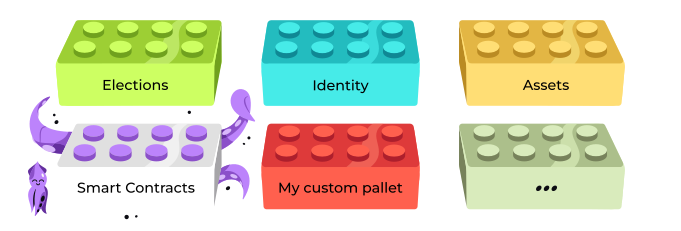

<aside class="notes"><ul>
<li>contracts written in ink! are compiled to Wasm bytecode</li>
<li>pallet contracts provides<ul>
<li>instrumentation</li>
<li>execution engine</li>
<li>gas metering</li>
</ul>
</li>
</ul>
</aside></script></section><section  data-markdown><script type="text/template">


<aside class="notes"><ul>
<li>pallet contracts is oblivious to the programming language</li>
<li>it accepts Wasm bytecode and executes it&#39;s instructions</li>
</ul>
</aside></script></section><section  data-markdown><script type="text/template">


<aside class="notes"><ul>
<li>contracts itself can be written in ink!</li>
</ul>
</aside></script></section><section  data-markdown><script type="text/template">


<aside class="notes"><ul>
<li>But also any other language that compilers to Wasm<ul>
<li>Solang</li>
<li>or ask!</li>
</ul>
</li>
</ul>
</aside></script></section><section  data-markdown><script type="text/template">
## Development: Prerequisites

Install the required tooling

```sh
sudo apt install binaryen
rustup component add rust-src --toolchain nightly
rustup target add wasm32-unknown-unknown --toolchain nightly
cargo install dylint-link
cargo install cargo-contract --force
```

- [binaryen](https://github.com/WebAssembly/binaryen) is a compiler for WebAssembly.
- [dylint-link](https://github.com/trailofbits/dylint) adds DSL specific lints.

<aside class="notes"><ul>
<li>Binaryen is a compiler and toolchain infrastructure library for WebAssembly</li>
<li>at the moment ink! uses a few unstable Rust features, thus nightly is require</li>
<li>rust source code is needed to compile it to wasm</li>
<li>wasm target is added</li>
<li>cargo-contract is a batteries included CLI tool for compiling, deploying and interacting with the contracts</li>
</ul>
</aside></script></section><section  data-markdown><script type="text/template">
## Development: cargo-contract

Create a contract

```sh
cargo contract new flipper
```

```sh
/home/CloudStation/Blockchain-Academy/flipper:
  drwxrwxr-x 2 filip filip 4096 Jul  7 11:11 .
  drwxr-xr-x 5 filip filip 4096 Jul  7 11:11 ..
  -rwxr-xr-x 1 filip filip  573 Jul  7 11:11 Cargo.toml
  -rwxr-xr-x 1 filip filip  285 Jul  7 11:11 .gitignore
  -rwxr-xr-x 1 filip filip 5186 Jul  7 11:11 lib.rs
```

<aside class="notes"><ul>
<li>ask how many student have written some code in Rust, this should feel familiar to them</li>
</ul>
</aside></script></section><section  data-markdown><script type="text/template">
## Development: Cargo.toml

<div style="font-size: 0.72em;">

```toml
[package]
version = "0.1.0"
authors = ["fbielejec"]
edition = "2021"

[dependencies]
ink = { version = "=4.3.0", default-features = false }
scale = { package = "parity-scale-codec", version = "3", default-features = false, features = ["derive"] }
scale-info = { version = "2.5", default-features = false, features = ["derive"], optional = true }

[lib]
path = "lib.rs"

[features]
default = ["std"]
std = [
    "ink/std",
    "scale/std",
    "scale-info/std",
]
```

</div>

<aside class="notes"><ul>
<li>who knows why is the std library not included by default?</li>
<li>Answer: contracts are compiled to Wasm (executed ib a sandboxed environment with no system interfaces, no IO, no networking)</li>
</ul>
</aside></script></section><section  data-markdown><script type="text/template">
## Development: contract code

<div style="font-size: 0.62em;">

```rust
#[ink::contract]
pub mod flipper {

    #[ink(storage)]
    pub struct Flipper {
        value: bool,
    }

    impl Flipper {
        #[ink(constructor)]
        pub fn new(init_value: bool) -> Self {
            Self { value: init_value }
        }

        #[ink(constructor)]
        pub fn default() -> Self {
            Self::new(Default::default())
        }

        #[ink(message)]
        pub fn flip(&mut self) {
            self.value = !self.value;
        }

        #[ink(message)]
        pub fn get(&self) -> bool {
            self.value
        }
    }
}
```

</div>

<aside class="notes"><ul>
<li>basic contract that flips a bit in storage</li>
<li>contract will have a storage definition, constructor(s), messages</li>
<li>grouped in a module</li>
</ul>
</aside></script></section><section  data-markdown><script type="text/template">
## Development: Compilation & artifacts

Compile:

```sh
cargo +nightly contract build
```

Artifacts:

```
 [1/*] Building cargo project
    Finished release [optimized] target(s) in 0.09s

The contract was built in RELEASE mode.

Your contract artifacts are ready. You can find them in:
/home/CloudStation/Blockchain-Academy/flipper/target/ink

  - flipper.contract (code + metadata)
  - flipper.wasm (the contract's code)
  - flipper.json (the contract's metadata)
```

<aside class="notes"><ul>
<li>produces Wasm bytecode and some additional artifacts:</li>
<li>.wasm is the contract compiled bytecode</li>
<li>.json is contract ABI aka metadata (for use with e.g. dapps)<ul>
<li>definitions of events, storage, transactions</li>
</ul>
</li>
<li>.contracts is both of these together</li>
</ul>
</aside></script></section><section  data-markdown><script type="text/template">
## Contracts code and instance

Deploy:

```sh
cargo contract instantiate --constructor default --suri //Alice
  --skip-confirm --execute
```

Output:

```sh [1-2|3-5]
  Event Contracts ➜ CodeStored
         code_hash: 0xbf18c768eddde46205f6420cd6098c0c6e8d75b8fb042d635b1ba3d38b3d30ad
       Event Contracts ➜ Instantiated
         deployer: 5GrwvaEF5zXb26Fz9rcQpDWS57CtERHpNehXCPcNoHGKutQY
         contract: 5EXm8WLAGEXn6zy1ebHZ4MrLmjiNnHarZ1pBBjZ5fcnWF3G8
```

<aside class="notes"><ul>
<li>we see a bunch of information on gas usage</li>
<li>we see two events one for storing contract code another for instantiating the contract<ul>
<li>why is that?</li>
<li>code &amp; instance are separated, we will come back to that</li>
</ul>
</li>
<li>finally we see code hash and the newly created contracts address</li>
</ul>
</aside></script></section><section  data-markdown><script type="text/template">
## Interacting with the contracts: queries

```sh
cargo contract call --contract 5EXm8WLAGEXn6zy1ebHZ4MrLmjiNnHarZ1pBBjZ5fcnWF3G8
  --message get --suri //Alice --output-json
```

- contract state?
- tip: `default` constructor was called

<aside class="notes"><ul>
<li>who can tell me what will be the contract state at this point?</li>
</ul>
</aside></script></section><section  data-markdown><script type="text/template">
## Interacting with the contracts: queries

<!-- Query the contract state: -->

<!-- ```sh -->
<!-- cargo contract call --contract 5EXm8WLAGEXn6zy1ebHZ4MrLmjiNnHarZ1pBBjZ5fcnWF3G8 -->
<!--   --message get --suri //Alice --output-json -->
<!-- ``` -->

<!-- Result: -->

```[6]
"data": {
  "Tuple": {
    "ident": "Ok",
    "values": [
      {
        "Bool": false
      }
    ]
  }
}
```
</script></section><section  data-markdown><script type="text/template">
## Interacting: transactions

Sign and execute a transaction:

```sh
cargo contract call --contract 5EXm8WLAGEXn6zy1ebHZ4MrLmjiNnHarZ1pBBjZ5fcnWF3G8
  --message flip --suri //Alice --skip-confirm --execute
```

Query the state:

```sh
cargo contract call --contract 5EXm8WLAGEXn6zy1ebHZ4MrLmjiNnHarZ1pBBjZ5fcnWF3G8
  --message get --suri //Alice --output-json
```

Result:

<div style="font-size: 0.82em;">

```[6]
"data": {
  "Tuple": {
    "ident": "Ok",
    "values": [
      {
        "Bool": true
      }
    ]
  }
}
```

</div>

<aside class="notes"><ul>
<li>if I query it again the bit is flipped</li>
<li>no surprises there</li>
</ul>
</aside></script></section><section  data-markdown><script type="text/template">
## Dev environment: Contracts UI

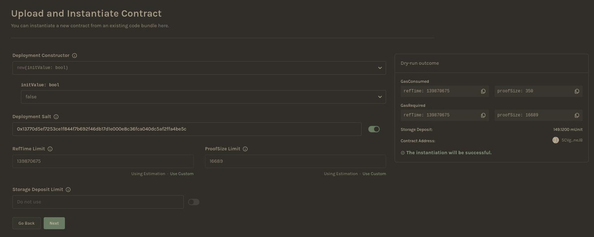

<aside class="notes"><ul>
<li>there is also a graphical env for deploying &amp; interacting with contracts</li>
<li>deploy &amp; create an instance of flipper</li>
</ul>
</aside></script></section><section  data-markdown><script type="text/template">
## Dev environment: Contracts UI

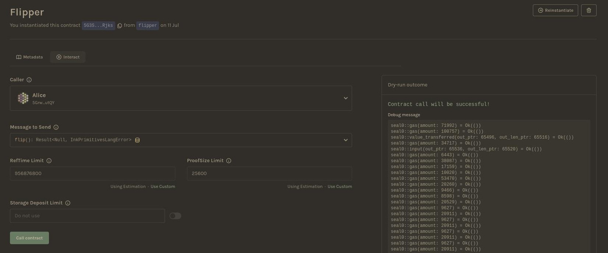

<aside class="notes"><ul>
<li>call a transaction</li>
</ul>
</aside></script></section><section  data-markdown><script type="text/template">
## Dev environment: Contracts UI


<aside class="notes"><ul>
<li>query state</li>
</ul>
</aside></script></section><section  data-markdown><script type="text/template">
## Developing contracts: Constructors

```rust [7,12,17|13,18,7-9|2-4,8|21-23]
#[ink(storage)]
pub struct Flipper {
    value: bool,
}

#[ink(constructor)]
pub fn new(init_value: bool) -> Self {
    Self { value: init_value }
}

#[ink(constructor)]
pub fn default() -> Self {
    Self::new(Default::default())
}

#[ink(constructor)]
pub fn non_default() -> Self {
    Self::new(false)
}

#[ink(constructor)]
pub fn fallible_constructor() -> Result<Self,Error> {
    fallible_function()?;
    Ok(Self::new(false))
}
```

<aside class="notes"><ul>
<li>lets dissect what a contract code is built like</li>
<li>no limit of the number of constructors</li>
<li>constructors can call other constructors</li>
<li>constructors return the initial storage</li>
<li>constructors can return Result</li>
<li>a lot of complexity conveniently hidden behind macros</li>
</ul>
</aside></script></section><section  data-markdown><script type="text/template">
## Developing contracts: Queries

```rust
#[ink(message)]
pub fn get(&self) -> bool {
    self.value
}
```

- `#[ink(message)]` is how we tell ink! this is a function that can be called on the contract
- `&self` is a reference to the contract's storage
<!-- #you’re calling this method on  -->

<aside class="notes"><ul>
<li>returns information about the contract state stored on chain</li>
<li>reaches to the storage, decodes it and returns the value</li>
</ul>
</aside></script></section><section  data-markdown><script type="text/template">
## Developing contracts: Mutations

```rust [1-2|6]
#[ink(message, payable)]
pub fn place_bet(&mut self, bet_type: BetType) -> Result<()> {
    let player = self.env().caller();
    let amount = self.env().transferred_value();
    ...
    self.data.set(&data);
    ...
```

- `&mut self` is a mutable reference to the object you’re calling this method on
- `payable` allows receiving value as part of the call to the ink! message

<aside class="notes"><ul>
<li>constructors are inherently payable</li>
<li>ink! message will reject calls with funds if it&#39;s not marked as such</li>
<li>mutable references allow me to modify the storage.</li>
<li>queries are for free, mutations are metered (you pay gas)<ul>
<li>you will also pay for queries within such transactions</li>
</ul>
</li>
</ul>
</aside></script></section><section  data-markdown><script type="text/template">
## Contracts: Error handling

<div style="font-size: 0.72em;">

```rust [1-4|8-11,16|14,20]
pub enum MyResult<T, E> {
    Ok(value: T),
    Err(msg: E),
}

#[derive(Debug, PartialEq, Eq, Encode, Decode)]
#[cfg_attr(feature = "std", derive(scale_info::TypeInfo))]
pub enum MyError {
    InkEnvError(String),
    BettingPeriodNotOver,
}

#[ink(message)]
pub fn spin(&mut self) -> Result<()> {
    if !self.is_betting_period_over() {
        return Err(MyError::BettingPeriodNotOver);
    ...
};

pub type Result<T> = core::result::Result<T, MyError>;

```

</div>

- ink! uses idiomatic Rust error handling: `Result<T,E>` type
- Use the Err variant to pass your own semantics
- Type aliases reduce boilerplate & enhance readability

<aside class="notes"><ul>
<li>ink! uses idiomatic Rust error handling</li>
<li><del>messages are the <code>system boundary</code></del></li>
<li>returning error variant or panicing reverts the transaction<ul>
<li>panicing is the same as returning Err variant (<code>Result</code> is just being nice)</li>
</ul>
</li>
</ul>
</aside></script></section><section  data-markdown><script type="text/template">
## Error handling: call stack

```rust
#[ink(message)]
pub fn flip(&mut self) {
    self.value = !self.value;

    if self.env().block_number() % 2 != 0 {
      panic!("Oh no!")
    }

}

```

- what is the state of this contract if the tx is called in an odd block number?

<aside class="notes"><ul>
<li>answer: whatever it was prior to the tx:<ul>
<li>returning error variant reverts the entire tx on the call stack</li>
</ul>
</li>
</ul>
</aside></script></section><section  data-markdown><script type="text/template">
## Error handling: cross-contract calls

<div style="font-size: 0.7em;">

```rust [13-19]
#[ink(storage)]
pub struct TransferCount {
    counter: u32,
}

#[ink(message)]
pub fn transfer(
    &mut self,
    token: AccountId,
    to: AccountId,
    amount: u128,
) -> Result<(), MostError> {
    let mut psp22: ink::contract_ref!(PSP22) = token.into();
    if psp22.transfer(to, amount, vec![]).is_ok() {
        self.counter += 1;
    }

    Ok(())
}
```

</div>

- What is the state of this contract if the transfer fails?

<aside class="notes"><ul>
<li>this is a contract that adds 1 for every successfull PSP22 transfer</li>
<li>uses a cross cotract all to initate that transfer</li>
<li>no-op</li>
</ul>
</aside></script></section><section  data-markdown><script type="text/template">
## Contracts: Defining shared behaviour

<div style="font-size: 0.5em;">

```rust [1-14|17,22]
#[ink::trait_definition]
pub trait PSP22 {
    #[ink(message)]
    fn total_supply(&self) -> Balance;

    #[ink(message)]
    fn balance_of(&self, owner: AccountId) -> Balance;

    #[ink(message)]
    fn approve(&mut self, spender: AccountId, amount: Balance) -> Result<(), PSP22Error>;

    #[ink(message)]
    fn transfer(&mut self, to: AccountId, value: Balance, data: Vec<u8>) -> Result<(), PSP22Error>;
    ...

impl SimpleDex {
    use psp22_trait::{PSP22Error, PSP22};

    /// Returns balance of a PSP22 token for an account
    fn balance_of(&self, token: AccountId, account: AccountId) -> Balance {
        let psp22: ink::contract_ref!(PSP22) = token.into();
        psp22.balance_of(account)
    }
    ...
```

</div>

- Trait Definition: `#[ink::trait_definition]`.
- Sharing the trait definition to do a cross-contract call.

<aside class="notes"><ul>
<li>(part of) PSP22 (ERC20 like) contract definition</li>
<li>all contracts that respect this definition need to implement it</li>
<li>you can now share the trait definition with other contracts</li>
<li>while getting a typed reference to an instance</li>
</ul>
</aside></script></section><section  data-markdown><script type="text/template">
## Contracts: Events

```rust
#[ink(event)]
#[derive(Debug)]
pub struct BetPlaced {
    #[ink(topic)]
    player: AccountId,
    #[ink(topic)]
    bet_type: BetType,
    amount: Balance,
}
```

- Events are a way of letting the outside world know about what's happening inside the contract.
- `#[ink(event)]` is a macro that defines events.
- Topics mark fields for indexing.

<aside class="notes"><ul>
<li>events are especially important for dapps</li>
<li>storage is expensive: reading e.g. aggregate data from chain directly is impossible / impractical</li>
<li>dapps the can listen to the event, normalize &amp; store off-chain and answer e.g. complex queries</li>
</ul>
</aside></script></section><section  data-markdown><script type="text/template">
## Contracts: Events

```rust
#[ink(message)]
pub fn flip(&mut self) {

    Self::emit_event(
        self.env(),
        Event::Flipped(Flipped { }),
    );

    self.value = !self.value;

    if self.env().block_number() % 2 == 0 {
      panic!("Oh no!")
    }

}

```

- What happens to the events from reverted transactions?
- Will this event be emitted in an odd block?

<aside class="notes"><ul>
<li>answer: yes, but only because I reverted the condition :)</li>
</ul>
</aside></script></section><section  data-markdown><script type="text/template">
## Importance of events

- **Events** are information that is emitted by transactions taking place on a blockchain.
- **Events** are way for a smart contracts to communicate that a specific action or state change has occurred.

<aside class="notes"><ul>
<li>we talked about the technical aspects of events but what are they exactly and what are they usefull for</li>
<li>what happens when a tx is submitted?<ul>
<li>it goes to mempool where it is picked up by a block producer and eventually included in the blockchain.</li>
</ul>
</li>
<li>so transactions do not immediately return a value. Enter events</li>
</ul>
</aside></script></section><section  data-markdown><script type="text/template">
## Importance of events

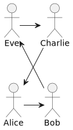

- The most important use of events is to pass along return values from contracts to a dapp's UI.
- How to access historical data?

<aside class="notes"><ul>
<li>ppl are transacting among each other e.g. an PSP22 token</li>
<li>head of the contract state stores just their cumulative balance</li>
<li>what if you want to display a history of transactions?</li>
<li>e.g. DEX may want to show to a user all the deposits they have made</li>
<li>replaying txs is slow and expensive</li>
<li>enter indexers</li>
</ul>
</aside></script></section><section  data-markdown><script type="text/template">
## Event indexers

- blockchain = append-only database
- events = logs
- indexers = log processors

An **indexer** is a process that listens to the events, processes them and stores normalized data in a persistent, queryable storage.
Typically some sort of API is then server over that data, that can be easily queried by the frontend applications.

**Examples:**

- [Subsquid: https://subsquid.io/](https://subsquid.io/)
- [TheGraph: https://thegraph.com/](https://thegraph.com/)

<aside class="notes"><ul>
<li>using terminology from event driven design architectures</li>
<li>in a classical relational database for example</li>
<li>examples of indexers</li>
<li>logs are also a cheaper form of storage: evm logs cost 8 gas per byte, whereas contract storage costs 20,000 gas per 32 bytes.</li>
</ul>
</aside></script></section><section  data-markdown><script type="text/template">
## Events as storage

- Events can be used as a cheaper form of storage.
- EVM logs cost 8 gas per byte, whereas contract storage costs 20,000 gas per 32 bytes.

<aside class="notes"><ul>
<li>as the last more esoteric usage of logs</li>
<li>logs are also a cheaper form of storage:</li>
</ul>
</aside></script></section><section  data-markdown><script type="text/template">
# Deeper dive
</script></section><section  data-markdown><script type="text/template">
## Deeper dive: Storage

```rust
use ink::storage::Mapping;

#[ink(storage)]
#[derive(Default)]
pub struct Token {
    total_supply: Balance,
    balances: Mapping<AccountId, Balance>,
    allowances: Mapping<(AccountId, AccountId), Balance>,
}
```

<aside class="notes"><ul>
<li>now that we dipped our toes lets dissect more</li>
<li>starting with the storage</li>
<li>what does this code actually put into the chain storage?</li>
</ul>
</aside></script></section><section  data-markdown><script type="text/template">
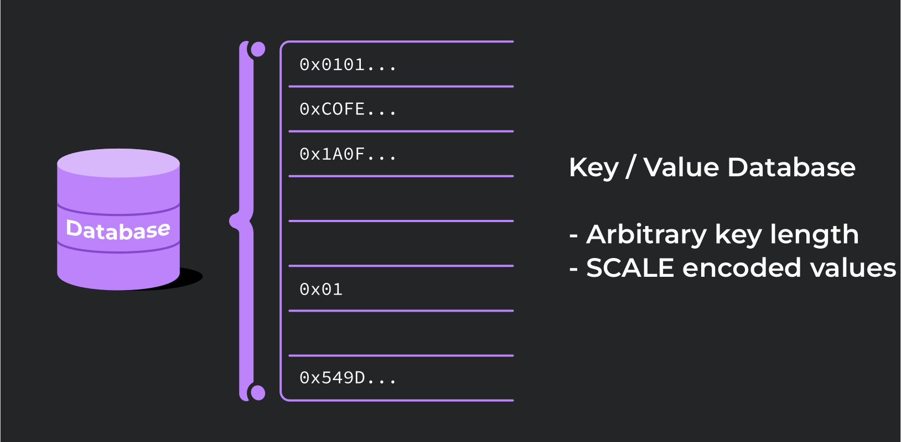

<font color="#8d3aed">SCALE</font> (_<font color="#8d3aed">S</font>imple <font color="#8d3aed">C</font>oncatenated <font color="#8d3aed">A</font>ggregate <font color="#8d3aed">L</font>ittle <font color="#8d3aed">E</font>ndian_)

<aside class="notes"><ul>
<li>Pallet contracts storage is organized like a key-value database</li>
<li>each storage cell has a unique storage key and points to a SCALE encoded value</li>
<li>SCALE codec is not self-describing (vide metadata)</li>
</ul>
</aside></script></section><section  data-markdown><script type="text/template">
## SCALE: examples of different types

<div style="font-size: 0.72em;">

| Type         | Decoding                              | Encoding example             | Remark                                                                         |
| ------------ | ------------------------------------- | ---------------------------- | ------------------------------------------------------------------------------ |
| Boolean      | false                                 | 0x0                          | encoded using least significant bit of a single byte                           |
|              | true                                  | 0x1                          |                                                                                |
| Unsigned int | 42                                    | 0x2a00                       |                                                                                |
| Enum         | enum IntOrBool { Int(u8), Bool(bool)} | 0x002a or 0x0101             | first byte encodes the variant index, remaining bytes encode the data          |
| Tuple        | (3, false)                            | 0x0c00                       | concatenation of each encoded value                                            |
| Vector       | [4, 8, 15, 16, 23, 42]                | 0x18040008000f00100017002a00 | encoding of the vector length followed by conatenation of each item's encoding |
| Struct       | {x:30u64, y:true}                     | [0x1e,0x0,0x0,0x0,0x1]       | names are ignored, Vec<u8> structure, only order matters                       |

</div>

<aside class="notes"><ul>
<li>this table is not exhaustive</li>
<li>struct example: stored as an vector, names are ignored, only order matters, first four bytes encode the 64-byte integer and then the least significant bit of the last byte encodes the boolean</li>
<li>can you decode the enum example? 42 and false</li>
</ul>
</aside></script></section><section  data-markdown><script type="text/template">
## Storage: Packed Layout

```rust [6]
use ink::storage::Mapping;

#[ink(storage)]
#[derive(Default)]
pub struct Token {
    total_supply: Balance,
    balances: Mapping<AccountId, Balance>,
    allowances: Mapping<(AccountId, AccountId), Balance>,
}
```

- By default ink! stores all storage struct fields under a single storage cell (`Packed` layout)

<aside class="notes"><ul>
<li>We talked about the kv database that the storage is, now how is it used precisely</li>
<li>Types that can be stored entirely under a single storage cell are called Packed Layout</li>
<li>by default ink! stores all storage struct fields under a single storage cell</li>
<li>as a consequence message interacting with the contract storage will always need to read and decode the entire contract storage struct</li>
<li>.. which may be what you want or not, depending on access patterns</li>
</ul>
</aside></script></section><section  data-markdown><script type="text/template">
## Storage: Packed Layout

```rust [1-4,7]
use ink::storage::traits::{
    StorageKey,
    ManualKey,
};

#[ink(storage)]
pub struct Flipper<KEY: StorageKey = ManualKey<0xcafebabe>> {
    value: bool,
}
```

- The storage key of the contracts root storage struct defaults to `0x00000000`
- However you may store it under any arbitrary 4 bytes key instead
</script></section><section  data-markdown><script type="text/template">
## Storage: Packed Layout

<div style="font-size: 0.82em;">

```json
  "storage": {
    "root": {
      "layout": {
        "struct": {
          "fields": [
            {
              "layout": {
                "leaf": {
                  "key": "0xcafebabe",
                  "ty": 0
                }
              },
              "name": "value"
            }
          ],
          "name": "Flipper"
        }
      },
      "root_key": "0xcafebabe"
    }
  }
```

</div>

<aside class="notes"><ul>
<li>demonstration of the packed layout - value is stored under the root key</li>
</ul>
</aside></script></section><section  data-markdown><script type="text/template">
## Storage: Un-packed Layout

```rust [1,7-8]
use ink::storage::Mapping;

#[ink(storage)]
#[derive(Default)]
pub struct Token {
    total_supply: Balance,
    balances: Mapping<AccountId, Balance>,
    allowances: Mapping<(AccountId, AccountId), Balance>,
}
```

- Mapping consists of a key-value pairs stored directly in the contract storage cells.
- Each Mapping value lives under it's own storage key.
- Mapping values do not have a contiguous storage layout: **it is not possible to iterate over the contents of a map!**

<aside class="notes"><ul>
<li>Use Mapping when you need to store a lot of values of the same type.</li>
<li>if your message only accesses a single key of a Mapping, it will not load the whole mapping but only the value being accessed.</li>
<li>there are other collection types in ink!: HashMap or BTreeMap (to name a few).<ul>
<li>these data structures are all Packed, unlike Mapping!</li>
</ul>
</li>
</ul>
</aside></script></section><section  data-markdown><script type="text/template">
## Storage: working with `Mapping`

```rust
pub fn transfer(&mut self) {
    let caller = self.env().caller();

    let balance = self.balances.get(caller).unwrap_or(0);
    let endowment = self.env().transferred_value();

    balance += endowment;
}


```

- what is wrong here?

<aside class="notes"><ul>
<li>working with mapping:</li>
<li>Answer: Mapping::get() method will result in an owned value (a local copy), as opposed to a direct reference into the storage. Changes to this value won&#39;t be reflected in the contract&#39;s storage &quot;automatically&quot;. To avoid this common pitfall, the value must be inserted again at the same key after it was modified. The transfer function from above example illustrates this:</li>
</ul>
</aside></script></section><section  data-markdown><script type="text/template">
## Storage: working with `Mapping`

```rust
pub fn transfer(&mut self) {
    let caller = self.env().caller();

    let balance = self.balances.get(caller).unwrap_or(0);
    let endowment = self.env().transferred_value();

    self.balances.insert(caller, &(balance + endowment));
}
```

- `Mapping::get()` returns a local copy, not a mutable reference to the storage!

<aside class="notes"><ul>
<li>working with mapping:</li>
<li><code>Mapping::get()</code> method will result in an owned value (a local copy).</li>
<li>Changes to this value won&#39;t be reflected in the contract&#39;s storage at all!</li>
<li>you need to inserted it again at the same key.</li>
</ul>
</aside></script></section><section  data-markdown><script type="text/template">
## Storage: Lazy

```rust [1,5]
use ink::storage::{traits::ManualKey, Lazy, Mapping};

#[ink(storage)]
pub struct Roulette {
    pub data: Lazy<Data, ManualKey<0x44415441>>,
    pub bets: Mapping<u32, Bet, ManualKey<0x42455453>>,
}
```

- Every type wrapped in `Lazy` has a separate storage cell.
- `ManualKey` assignes explicit storage key to it.
- Why would you want to use a `ManualKey` instead of a generated one?

<aside class="notes"><ul>
<li>packed layout can get problematic if we&#39;re storing a large collection in the contracts storage that most of the transactions do not need access too</li>
<li>there is a 16kb hard limit on a buffer used for decoding, contract trying to decode more will trap / revert</li>
<li>lazy provides per-cell access, like a mapping</li>
<li>lazy storage cell can be auto-assigned or chosen manually</li>
<li>using ManualKey instead of AutoKey might be especially desirable for upgradable contracts, as using AutoKey might result in a different storage key for the same field in a newer version of the contract.<ul>
<li>This may break your contract after an upgrade!</li>
</ul>
</li>
</ul>
</aside></script></section><section  data-markdown><script type="text/template">
## Storage: Lazy

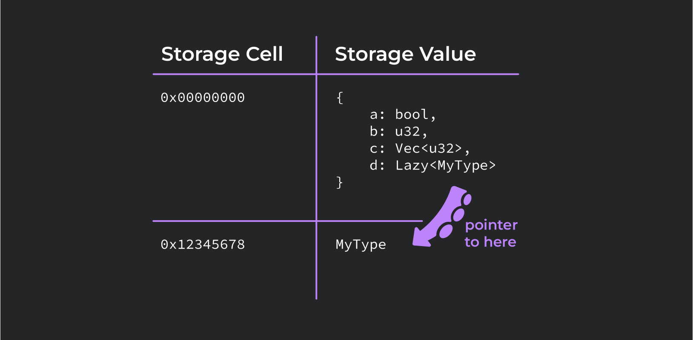

<aside class="notes"><ul>
<li>only the pointer (the key) to the lazy type is stored under the root key.</li>
<li>only when there is a read of <code>d</code> will the pointer be de-referenced and it&#39;s value decoded.</li>
<li>lazy is a bit of a mis-nomer here, because storage is already initialized.</li>
</ul>
</aside></script></section><section  data-markdown><script type="text/template">
# Upgradeable contracts
</script></section><section  data-markdown><script type="text/template">
## Contracts upgradeability: `set_code_hash`

```rust [3]
#[ink(message)]
pub fn set_code(&mut self, code_hash: [u8; 32]) -> Result<()> {
    ink::env::set_code_hash(&code_hash)?;
    Ok(())
}

```

- Within SC's lifecycle it is often necessary to perform an upgrade or a bugfix.
- Contract's code and it's instance are separated.
- Contract's address can be updated to point to a different code stored on-chain.

<aside class="notes"><ul>
<li>append only != immutable</li>
<li>proxy pattern known from e.g. solidity is still possible</li>
<li>within the Substrate framework contract&#39;s code is stored on-chain and it&#39;s instance is a pointer to that code</li>
<li>incentivizes cleaning up after oneself</li>
<li>big storage optimization</li>
</ul>
</aside></script></section><section  data-markdown><script type="text/template">
## Upgradeability: storage

<div style="font-size: 0.72em;">

```rust [1-4,6-10|1-4,12-16|18-21|23-26]
#[ink(message)]
pub fn get_values(&self) -> (u32, bool) {
    (self.x, self.y)
}

#[ink(storage)]
pub struct MyContractOld {
    x: u32,
    y: bool,
}

#[ink(storage)]
pub struct MyContractNew {
    y: bool,
    x: u32,
}
```

</div>

- Make sure your updated code is compatible with the existing contracts state.
- Will the getter work with the new definition and the old storage ?

<aside class="notes"><ul>
<li>Various potential changes that can result in backwards incompatibility:<ul>
<li>Changing the order of variables</li>
<li>Introducing new variable(s) before any of the existing ones</li>
<li>Changing variable type(s)</li>
<li>Removing variables</li>
</ul>
</li>
<li>Answer: no, SCALE encoding is oblivious to names, only order matters</li>
</ul>
</aside></script></section><section  data-markdown><script type="text/template">
## Upgradeability: storage migrations

<div style="font-size: 0.70em;">

```rust []
pub struct OldState {
    pub field_1: u32,
    pub field_2: bool,
}

#[ink(storage)]
pub struct OldA {
    old_state: Lazy<OldState, ManualKey<123>>,
}

#[ink(message)]
pub fn set_code(&mut self, code_hash: [u8; 32], callback: Option<Selector>) {
  set_code_hash(&code_hash)?;
  call_migrate()?; // delegates a `migrate` call to the new contract code, but using callers context
}
```

```rust []
pub struct UpdatedOldState {
    pub field_1: bool,
    pub field_2: u32,
}

#[ink(storage)]
pub struct NewA {
    updated_old_state: Lazy<UpdatedOldState, ManualKey<123>>,
}

#[ink(message, selector = 0x4D475254)]
pub fn migrate(&mut self) -> Result<()> {
    if let Some(OldContractState { field_1, field_2 }) = get_contract_storage(&123)? {
        self.updated_old_state.set(&UpdatedOldState {
            field_1: field_2,
            field_2: field_1,
        });
        return Ok(());
    }
    return Err(Error::MigrationFailed);
}
```

</div>

<aside class="notes"><ul>
<li>if the new contract code does not match the stored state you can perform a storage migration</li>
<li>think of regular relational DB and schema migrations</li>
<li>a good pattern to follow is to perform the update and the migration in one atomic transaction:<ul>
<li>if anything fails whole tx is reverted</li>
<li>won&#39;t end up in a broken state</li>
<li>make sure it can fit into one block!</li>
</ul>
</li>
</ul>
</aside></script></section><section  data-markdown><script type="text/template">
## Contracts upgradeability: access control

```rust [3]
#[ink(message)]
pub fn set_code(&mut self, code_hash: [u8; 32]) -> Result<()> {
    ensure_owner(self.env().caller())?;
    ink::env::set_code_hash(&code_hash)?;
    Ok(())
}

```

<aside class="notes"><ul>
<li>you DO NOT want to leave this message un-guarded</li>
<li>solutions to <code>ensure_owner</code> can range from a very simple ones address checks</li>
<li>to a multiple-role database of access controlled accounts stored and maintained in a separate contract</li>
</ul>
</aside></script></section><section  data-markdown><script type="text/template">
# Common Vulnerabilities
</script></section><section  data-markdown><script type="text/template">
## Past exploits: The DAO hack (2016)

- The DAO (Decentralized Autonomous Organization) was a crowdfunding project on the Ethereum network.
- In June 2016 an attacker drained funds (worth ~$50 million at that time) and was about to drain even more.
- The funds were moved into an account subject to a 28-day holding period under the terms of the DAO smart contract.

<aside class="notes"><ul>
<li>Ethereum was searching for its killer app, dao&#39;s were supposed to be it</li>
<li>DAO was a form of a decentralized investor - directed venture capital (VC) fund.</li>
<li>At a pinnacle of it&#39;s popularity The DAO attracted nearly 15% of all the ETH in circulation back then.</li>
<li>the funds were actually not gone (but they would be soon).</li>
</ul>
</aside></script></section><section  data-markdown><script type="text/template">
## Past exploits: The DAO hack (2016)

- The core Ethereum faced a difficult decision:
  - On one hand the blockchain promised to be decentralized and tamper-resistant.
  - On the other hand the public's confidence and optimism about the then young blockchain technology demanded an intervention.

<aside class="notes"><ul>
<li>the hacker was slowly draining the funds from the DAO, in front of everyone</li>
<li>DAO SC was sending an amount of ETH equivalent to the hacker’s deposit</li>
<li>an ethical obligation to prevent theft</li>
</ul>
</aside></script></section><section  data-markdown><script type="text/template">
## Past exploits: The DAO hack (2016)

- Eventually a vote in favour of **forking** the Ethereum history won out with 85% of the votes.
- Some miners decided to keep mining on the old history, and this sesulted in the creation of _Ethereum_ (ETH) and _Ethereum Classic_ (ETC) which operates to this day.

<aside class="notes"><ul>
<li>forking mean that the new chain would operate as though the hack never happened</li>
<li>basically re-writing history</li>
<li>the fork happened becasue of ideological differences</li>
</ul>
</aside></script></section><section  data-markdown><script type="text/template">
## Reentrancy attacks

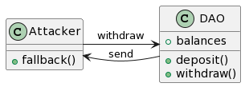

- The DAO hacker used what became known as a _reentrancy_ attack.
- Attacker exploited a _fallback_ function in Solidity to create a loop that slowly syphoned funds out of the DAO contract.
- Fallback functions are special constructs in Solidity that are triggered in specific situations.

<aside class="notes"><ul>
<li>fallback function is a special function that is executed when a contract receives Ether without any data</li>
<li>... or when it receives a message that does not match any of its function signatures.</li>
</ul>
</aside></script></section><section  data-markdown><script type="text/template">
## Reentrancy: the fallback function

```solidity []
pragma solidity ^0.8.0;

contract FallbackExample {
    event Received(address sender, uint value);

    // Payable fallback function
    receive() external payable {
        emit Received(msg.sender, msg.value);
    }
}

```

- The fallback function does not take any arguments and has no return values.
- It can be marked as **payable** to allow the contract to receive funds.
- It is triggered if ETH is sent to the contract and there is no accompanying _calldata_ (a data location like memory or storage).

<aside class="notes"><ul>
<li>Fallback functions can include arbitrary logic in them, in this attack example it called back into withdraw function</li>
<li>It&#39;s worth noting that as of Solidity version 0.6.0, you can also use the fallback keyword instead of receive to define the fallback function.</li>
<li>However, it&#39;s a good practice to use receive for the fallback function related to Ether reception, and fallback for fallback functions without the ability to receive Ether.</li>
</ul>
</aside></script></section><section  data-markdown><script type="text/template">
## Reentrancy: an example

<div style="font-size: 0.70em;">

```rust [1-4|6-15|17-33]
#[ink(storage)]
pub struct Dao {
    balances: Mapping<AccountId, Balance>,
}

#[ink(message, payable, selector = 0x4445504F)]
pub fn deposit(&mut self) -> Result<(), DaoError> {
    let caller = self.env().caller();

    let current_balance = self.balances.get(caller).unwrap_or_default();
    let updated_balance = current_balance + self.env().transferred_value();

    self.balances.insert(caller, &updated_balance);
    Ok(())
}

#[ink(message)]
pub fn withdraw(&mut self) -> Result<(), DaoError> {
    let caller = self.env().caller();
    let balance = self.balances.get(caller).ok_or(DaoError::NoDeposit)?;

    build_call::<DefaultEnvironment>()
        .call(caller)
        .call_flags(CallFlags::default())
        .exec_input(ExecutionInput::new(Selector::new([0x52, 0x45, 0x43, 0x56])))
        .transferred_value(balance)
        .returns::<()>()
        .try_invoke()??;

    self.balances.remove(caller);

    Ok(())
}
```

</div>

<aside class="notes"><ul>
<li>ink! does not have fallback functions, but it is not immune from reentrancy attacks either</li>
<li>this contract mimics the DAO</li>
<li>it has a mapping for maintaing balances</li>
<li>it has a deposit function for sending the funds and a withdraw for getting them all back at once</li>
<li>withdrawals calls the <code>callers</code> contract and sends the funds to a function with this 4 byte signature.</li>
<li>can anyone spot what the problem is?</li>
<li>how would you use it to craft an attack?</li>
</ul>
</aside></script></section><section  data-markdown><script type="text/template">
## Reentrancy: attacker's code example

<div style="font-size: 0.70em;">

```rust[3-9|11-12|17-22]
#[ink(message)]
pub fn attack(&mut self) -> Result<(), AttackerError> {
    build_call::<DefaultEnvironment>()
        .call(self.dao_address)
        .call_flags(CallFlags::default().set_allow_reentry(true))
        .exec_input(ExecutionInput::new(Selector::new([0x44, 0x45, 0x50, 0x4F])))
        .transferred_value(ONE_AZERO)
        .returns::<Result<(), DaoError>>()
        .invoke()?;

    let mut dao = DaoRef::from_account_id(self.dao_address);
    dao.withdraw()?;

    Ok(())
}

#[ink(message, payable, selector = 0x52454356)]
pub fn receive(&mut self) -> Result<(), DaoError> {
    let mut dao = DaoRef::from_account_id(self.dao_address);
    dao.withdraw()?;
    Ok(())
}
```

</div>

<aside class="notes"><ul>
<li>attacker deploys an SC that acts as an investor</li>
<li>it begins by depositing and this contract deposits some ETH into The DAO.</li>
<li>This entitles the attacker to later call the <code>withdraw</code> function of the DAO to get his deposits back.</li>
<li>When the <code>withdraw</code> is called, the DAO sends back the funds by calling the payable <code>receive</code> function.</li>
<li>but this function is crafted by the attacker to maliciously call the DAOs <code>withdraw</code> again.</li>
<li>since the state is not yet updated the call does not revert and withdraw send the funds yet again.</li>
<li>this effectively creates an evil feedback loop which drains all the funds.</li>
<li>how would you fix this?</li>
</ul>
</aside></script></section><section  data-markdown><script type="text/template">
## Reentrancy: fixing the vulnerabilities

<div style="font-size: 0.70em;">

```rust[6,16]
#[ink(message)]
pub fn withdraw(&mut self) -> Result<(), DaoError> {
    let caller = self.env().caller();
    let balance = self.balances.get(caller).ok_or(DaoError::NoDeposit)?;

    self.balances.remove(caller);

    build_call::<DefaultEnvironment>()
        .call(caller)
        .call_flags(CallFlags::default())
        .exec_input(ExecutionInput::new(Selector::new([0x52, 0x45, 0x43, 0x56])))
        .transferred_value(balance)
        .returns::<()>()
        .invoke();

    // self.balances.remove(caller);

    Ok(())
}
```

</div>

<aside class="notes"><ul>
<li>simplest fix is to just change the order of operations in the <code>withdraw</code> fn</li>
<li>This way when the function calls into the attacker contract’s receive() function, and it tries to re-enter the <code>withdraw</code> the entry is removed from the balance&#39;s map and the whole transaction reverts.</li>
<li>Checks-Effects-Interactions pattern</li>
</ul>
</aside></script></section><section  data-markdown><script type="text/template">
## Reentrancy: fixing the vulnerabilities

<div style="font-size: 0.70em;">

```rust [8]
#[ink(message)]
pub fn withdraw(&mut self) -> Result<(), DaoError> {
    let caller = self.env().caller();
    let balance = self.balances.get(caller).ok_or(DaoError::NoDeposit)?;

    build_call::<DefaultEnvironment>()
        .call(caller)
        .call_flags(CallFlags::default().set_allow_reentry(false))
        .exec_input(ExecutionInput::new(Selector::new([0x52, 0x45, 0x43, 0x56])))
        .transferred_value(balance)
        .returns::<()>()
        .invoke();

    self.balances.remove(caller);

    Ok(())
}
```

</div>

<aside class="notes"><ul>
<li>Another fix id to contract to explicitely dissallow re-entering the <code>receive</code> function while the <code>withdraw</code> it is still executing.</li>
<li>this way any re-entry is blocked</li>
<li>ink! has built-in syntax for this, that works on the calls stack level</li>
<li>mutex (mutually exclusive) pattern</li>
</ul>
</aside></script></section><section  data-markdown><script type="text/template">
## Past exploits: The Parity Wallet Hack (July 2017)


- Vulnerability on the Parity Multisig Wallet allowed an attacker to steal > 150,000 ETH.
- Three high-profile multisig wallet contracts used to store funds from token sales were affected.
- The attacker sent 2 transactions to each of the affected contracts:
  - the first to obtain ownership of the MultiSig.
  - the second to move all of its funds.

<aside class="notes"><ul>
<li>worth some ~30M USD back then.</li>
<li>the exploit was silly by todays standards</li>
<li>but we have to remember this is a blast from the past</li>
</ul>
</aside></script></section><section  data-markdown><script type="text/template">
## The Parity Wallet Hack: proxy pattern

```solidity []
address constant _walletLibrary = 0xcafecafecafecafecafecafecafecafecafecafe;

...

function isOwner(address _addr) constant returns (bool) {
  return _walletLibrary.delegatecall(msg.data);
}
```

- **Proxy pattern** is a way to reduce costs by sharing code between contracts.
- All logic is stored in a stateless library contract deployed once, and a lightweight contract proper is deployed as many times as neccesary.
- `DELEGATECALL` EVM instruction does the following:
  - for whatever method that calls it, it will delegate that call to another contract, but using the context of the current contract.

<aside class="notes"><ul>
<li>ethereum&#39;s EVM does not have the separation between code and the SC instance like substrate does.</li>
<li>think <code>super</code> call in Java.</li>
<li>context = state, state of a library is not altered when delgating a call.</li>
<li>all perfectly innocent and used ot this day, problem lies elsewhere.</li>
</ul>
</aside></script></section><section  data-markdown><script type="text/template">
## The Parity Wallet Hack: `initWallet` library function

<div style="font-size: 0.70em;">

```[1-4|6-16]
function initWallet(address[] _owners, uint _required, uint _daylimit) {
  initDaylimit(_daylimit);
  initMultiowned(_owners, _required);
}

function initMultiowned(address[] _owners, uint _required) {
  m_numOwners = _owners.length + 1;
  m_owners[1] = uint(msg.sender);
  m_ownerIndex[uint(msg.sender)] = 1;
  for (uint i = 0; i < _owners.length; ++i)
  {
    m_owners[2 + i] = uint(_owners[i]);
    m_ownerIndex[uint(_owners[i])] = 2 + i;
  }
  m_required = _required;
}
```

</div>

- wallet library contained `initWallet` function that was called from the wallets constructor.
- and _i.e._ it called this logic.

<aside class="notes"><ul>
<li>it writes the owners of this contract to the contracts storage (state)</li>
<li>still nothing technically nothing wrong here</li>
</ul>
</aside></script></section><section  data-markdown><script type="text/template">
## The Parity Wallet Hack: the critical mistake

```solidity []
function() payable {
  // just being sent some cash?
  if (msg.value > 0)
    Deposit(msg.sender, msg.value);
  else if (msg.data.length > 0)
    _walletLibrary.delegatecall(msg.data);
}
```

- This exact code was defined in the wallet itself.
- Do you see what happens here?
- How would you fix this?

<aside class="notes"><ul>
<li>reckognize this? yes, this is a fallback function</li>
<li>who can tell me what happens here?</li>
<li>If a method with this name is not defined in this contract</li>
<li>and if no ETH is being sent in the transaction</li>
<li>and if there is some data in the message payload</li>
<li>Then call the exact same method as it is defined in _walletLibrary (but using <code>delegatecall</code> that is in the context of this contract)</li>
<li>the hacker effectively re-initialized the wallet, overwrote the owners making himself the sole owner and stole the funds.</li>
</ul>
</aside></script></section><section  data-markdown><script type="text/template">
## The Parity Wallet Hack: the aftermath

- The `initWallet` and `initMultiowned` should have been defined as `internal` (aka private).
- There was no check in place for whether the wallet was already initialized.
- The raw `DELEGATECALL` should haven been replaced with a whitelist of calls that can be delegated.

<aside class="notes"><ul>
<li>so what was at fault here?</li>
<li>you could argue there were at least three vulnerabilities</li>
<li>fixing either of them would have prevented the exploit</li>
<li>akin to e.g. running unsanitized SQL (sql injections).</li>
</ul>
</aside></script></section><section  data-markdown><script type="text/template">
## The Parity Wallet Hack: reloaded (November 2017)

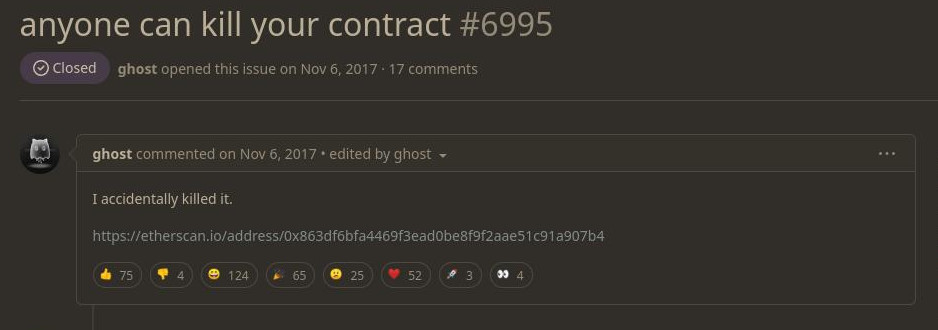

- Following the fix for the original multisig vulnerability exploited in July a new version of the library contract was deployed.
- Unfortunately it contained another vulnerability ...
- Estimated losses totalled over 500,000 ETH.

<aside class="notes"><ul>
<li>USD 150 million USD back then</li>
<li>including over 300,000 ETH from the Web3 Foundation team.</li>
<li>hacker did not walk with funds this itme, rather locked them forever</li>
</ul>
</aside></script></section><section  data-markdown><script type="text/template">
## The Parity Wallet Hack reloaded: the what?

```solidity []
function kill(address _to) onlymanyowners(sha3(msg.data)) external {
  suicide(_to);
}
```

- library contract contained this function.
- `suicide` (now `selfdestruct`) opcode was added to the EVM after the DAO hack.
- It removes a contract from the blockchain and sends its ETH balance to a designated recipient.
- Hacker was able to call this function on the _library_ contract itself, remove it and rendered all of the proxy contracts broken.
- `kill` is protected with a `onlymanyowners` modifier so how was he able to call it?

<aside class="notes"><ul>
<li>The DAO attack continued for days due to the immutability of Solidity contracts</li>
<li>remmeber how whitehat hackers tried to syphon the funds only faster than the blackhat?</li>
<li>This is why it was introduced - as a safety feature in case of security threats</li>
</ul>
</aside></script></section><section  data-markdown><script type="text/template">
## The Parity Wallet Hack reloaded: the how?

<div style="font-size: 0.72em;">

```solidity []
uint public m_numOwners;

modifier only_uninitialized { if (m_numOwners > 0) throw; _; }

function initWallet(address[] _owners, uint _required, uint _daylimit) only_uninitialized
  initDaylimit(_daylimit);
  initMultiowned(_owners, _required);
}

function initMultiowned(address[] _owners, uint _required) internal {
  ...
}
```

</div>

- in the aftermath of the July attack the above changes were added to the library:
  - `initMultiowned` was given _internal_ visibility.
  - `only_uninitialized` check was added.
- So what happened?

<aside class="notes"><ul>
<li>that does seems to fix the problem: if the attacker attempts to invoke <code>initWallet</code> on an already deployed contract it is rejected</li>
<li>can anyone say what has happened?</li>
</ul>
</aside></script></section><section  data-markdown><script type="text/template">
## The Parity Wallet Hack reloaded: the how?

<div style="font-size: 0.72em;">

```solidity []
uint public m_numOwners;

modifier only_uninitialized { if (m_numOwners > 0) throw; _; }

function initWallet(address[] _owners, uint _required, uint _daylimit) only_uninitialized
  initDaylimit(_daylimit);
  initMultiowned(_owners, _required);
}

function initMultiowned(address[] _owners, uint _required) internal {
  ...
}

function kill(address _to) onlymanyowners(sha3(msg.data)) external {
  suicide(_to);
}
```

- by default, Solidity functions have _public_ visibility.
- `initWallet` was public in the library itsef.
- By calling it hacker has made himself the owner of the library (since `m_numOwners == 0` in an un-initialized contract) and than called `kill`, passing his own address.
- [Details](https://github.com/openethereum/parity-ethereum/issues/6995) of the exploit: https://etherscan.io/address/0x863df6bfa4469f3ead0be8f9f2aae51c91a907b4#code

</div>

<aside class="notes"><ul>
<li>it had to be, all the library functions have to be public to be callable from the outside</li>
<li>this time around hacker walked with no funds (as the lib had none)</li>
</ul>
</aside></script></section><section  data-markdown><script type="text/template">
## The Parity Wallet Hack reloaded: lessons for ink! development

```rust
impl MyContract {

  #[ink(message)]
  pub fn terminate(&mut self) -> Result<()> {
      let caller = self.env().caller();
      self.env().terminate_contract(caller)
  }

  ...
}
```

<aside class="notes"><ul>
<li>substate /ink! usually has no need for a proxy pattern but similar concepts do apply</li>
<li>what is wrong with this code?</li>
<li>how would you fix it?</li>
</ul>
</aside></script></section><section  data-markdown><script type="text/template">
## The Parity Wallet Hack reloaded: lessons for ink! development

```rust [4,8-14]
#[ink(message)]
pub fn terminate(&mut self) -> Result<()> {
    let caller = self.env().caller();
    self.ensure_owner()?;
    self.env().terminate_contract(caller)
}

fn ensure_owner(&self) -> Result<(), GovernanceError> {
    let caller = self.env().caller();
    match caller.eq(&self.owner) {
        true => Ok(()),
        false => Err(Error::NotOwner),
    }
}
```

<aside class="notes"><ul>
<li>making sure only designated account(s) can call <code>terminate</code></li>
</ul>
</aside></script></section><section  data-markdown><script type="text/template">
## The BatchOverflow exploit (April 2018)

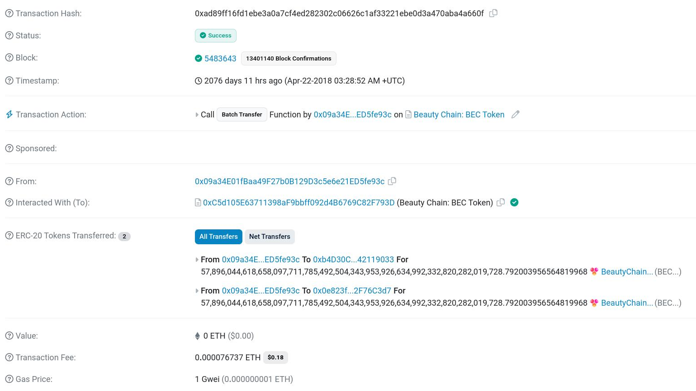

- In just two transaction an attacker was able to withdraw **~115e57 (115 octodecillion)** BEC (Beauty Coin).
- BEC was trading at USD 0.32 per token, which makes the total value of that exploit a staggering **USD 3.7e60 (3.7 novemdecillion)**.
- It was followed by a number of similar exploits, all targeting ERC20 tokens, prompting many exchanges to halt all ERC20 trading.

<aside class="notes"><ul>
<li>off course there was nowhere near that liquidity so no, there is not a person richer than Earths GDP</li>
<li>OKEx, Poloniex, Changelly, Huobi...</li>
</ul>
</aside></script></section><section  data-markdown><script type="text/template">
## The BatchOverflow exploit: integer overflow

```rust
        128u8 + 128u8 == 0;
```

- Integer _overflow_ and _underflow_ occur when user supplied data **controls the value of an unsigned integer.**
- The user supplied data either adds to or subtracts beyond the limits of what the variable type can hold, causing it to **wrap around**.

<aside class="notes"><ul>
<li>Primitive integer types supported by CPUs are finite approximations to the infinite set of integers known form mathematics</li>
<li>and underflow for that matter</li>
<li>as in back to a number it understands</li>
<li>u8 holds 8 bits and (128+128) mod 256 = 0</li>
</ul>
</aside></script></section><section  data-markdown><script type="text/template">
## The BatchOverflow exploit: example

<div style="font-size: 0.72em;">

```rust [1|3-32]
type MyBalance = u8;

#[ink(message)]
pub fn batch_transfer(
    &mut self,
    receivers: Vec<AccountId>,
    value: MyBalance,
) -> Result<(), Error> {
    let count = receivers.len();

    if (count == 0 || count > 20 || value == 0) {
        return Err(Error::CannotTransfer);
    }

    let caller = self.env().caller();
    let amount = count as MyBalance * value;
    let caller_balance = self.get_balance(caller);

    if caller_balance < amount {
        return Err(Error::SenderBalanceTooLow);
    }

    self.balances.insert(caller, &(caller_balance - amount));

    for i in 0..cnt {
        let receiver = receivers.get(i).unwrap();
        let receiver_balance = self.get_balance(*receiver);
        self.balances.insert(receiver, &(receiver_balance + value));
    }

    Ok(())
}
```

</div>

<aside class="notes"><ul>
<li>can you spot the problem? Which line exactly is problematic?</li>
<li>actually Rust is pretty good at catching runtime overflows, so this will panic, unless</li>
</ul>
<pre><code class="language-toml">[profile.dev]
overflow-checks = false
[profile.release]
overflow-checks = false
</code></pre>
</aside></script></section><section  data-markdown><script type="text/template">
## The BatchOverflow exploit: example

<div style="font-size: 0.70em;">

```rust []
let caller = default_accounts::<DefaultEnvironment>().alice;
set_caller::<DefaultEnvironment>(caller);

let mut token = Overflows::new();
let receiver_one = default_accounts::<DefaultEnvironment>().bob;
let receiver_two = default_accounts::<DefaultEnvironment>().charlie;

let sender_balance_before = token.get_balance(caller);
assert_eq!(0, sender_balance_before);

let receiver_balance_before = token.get_balance(receiver_one);
assert_eq!(0, receiver_balance_before);

token
    .batch_transfer(vec![receiver_one, receiver_two], 128)
    .expect("Can transfer");

let receiver_balance_after = token.get_balance(receiver_one);

assert_eq!(128, receiver_balance_after);
```

</div>

<aside class="notes"><ul>
<li>neither sender nor receivers had any funds</li>
<li>yet 128 tokens were created out of thin air</li>
</ul>
</aside></script></section><section  data-markdown><script type="text/template">
## The BatchOverflow exploit: example


- money printer goes brrr...
- How would you fix it?

</div>

<aside class="notes"><ul>
<li>money out of thin air</li>
<li>see a fix?</li>
</ul>
</aside></script></section><section  data-markdown><script type="text/template">
## The BatchOverflow exploit: fixit

```rust [1|3-14]
let amount = Self::safe_multiply(count as MyBalance, value)?;

fn safe_multiply(a: MyBalance, b: MyBalance) -> Result<MyBalance, MyError> {
    if a == 0 || b == 0 {
        return Ok(0);
    }

    let c = a * b;
    if c / a == b {
        return Ok(c);
    }

    Err(MyError::Arithmetic)
}

```

- We perform a reverse operation (division)
- Value _c_ is divided by _a_ and we check whether this is equal to the value of _b_
- If this was an overflow and wrapped around back to 0 then this check fails incorrect.
</script></section><section  data-markdown><script type="text/template">
## The BatchOverflow exploit: fixit

- runtime checks in Rust are performed only in _debug_ mode, as they hinder performance

```toml
[profile.release]
overflow-checks = false
```

- This prints 0 in _release_ mode and panics in _debug_:

```rust
let x: u8 = "128".parse().unwrap();
let val: u8 = x + 128;
println!("{}", val);
```

- it's best to be explicit:

```rust
let amount = (count as MyBalance).checked_mul(value)
              .ok_or(MyError::Arithmetic)?;
```

<aside class="notes"><ul>
<li>in Rust there is no need to roll your own code</li>
<li>in Solidity take a look at the SafeMath library</li>
<li>explicit to the compiler about what you want to do</li>
</ul>
</aside></script></section><section  data-markdown><script type="text/template">
# Maximal Extractable Value (MEV)

<aside class="notes"><ul>
<li>we will now talk about MEV (Maximal extractable value)</li>
</ul>
</aside></script></section><section  data-markdown><script type="text/template">
# MEV

- The concept of MEV was first floated as early as 2014 (Ethereum pre-genesis), in the context of Proof-of-work.
- It was referred to as the _invisible tax_, the maximum value a miner can extract from moving around transactions when producing a block on a blockchain network.
- After the Merge (Ethereum's move to POS consensus) **Miner Extractable Value** became **Maximal extractable value**.

<aside class="notes"><ul>
<li>MEV skyrocketed during the 2021 DeFi summer.</li>
<li>MEV was first applied in the context of proof-of-work, and referred to as the Miner Extractable Value.</li>
<li>This is because in POW miners hold most of the power, controlling the transaction inclusion / exclusion and ordering.</li>
<li>However in the proof-of-stake the validators are been responsible for these roles.</li>
<li>The value extraction methods still exist though, so the term &quot;Maximal extractable value&quot; is now used instead.</li>
</ul>
</aside></script></section><section  data-markdown><script type="text/template">
## MEV: The Dark Forest

- We have now seen a number of smart contract exploits.
- Blockchain is a highly **competetive and adversarial** environment.
- But the dangers pale in comparison to the **mempool**.

<aside class="notes"><ul>
<li>if a smart contract can be exploited for profit it&#39;s just a matter of time when it will be.</li>
<li>there is a lot af smart ppl spending a lot of time examining contracts for vulnerabilities.</li>
<li>mempool is the set of pending, unconfirmed transactions.</li>
</ul>
</aside></script></section><section  data-markdown><script type="text/template">
## MEV: The Dark Forest


<div style="font-size: 0.72em;">

- Novel by Cixin Liu describes the concept of a "dark forest", the ultimate adversarial environment, where detection means certain destuction from the hands of apex predators.
- **Generalized Frontrunners** are bots looking for _any_ profitable transactions submitted to the mempool.
- _Ethereum is a Dark Forest, Dan Robinson and Georgios Konstantopoulos_ **[August 2020]**.

<aside class="notes"><ul>
<li>Cixin Liu [Si-Szin Lju]</li>
<li>who&#39;s familiar with these novels?</li>
<li>The Dark Forest is a 2-nd book in the sci-fi series Remembrance of the Earth&#39;s Past</li>
<li>Publicly identifying someone else’s location is as good as directly destroying them</li>
<li>These Frontrunners work by copying it and replacing the address with their own<ul>
<li>They can even execute the transaction in a sandbox and submit just the profitable internal transactions as their own.</li>
<li>One encounter with such a bot was described by these two researchers.</li>
</ul>
</li>
</ul>
</div></aside></script></section><section  data-markdown><script type="text/template">
## The Dark Forest


<div style="font-size: 0.70em;">

credit: **Kurzgesagt** , _Why We Should NOT Look For Aliens - The Dark Forest_

</div>

- The Dark Forest theory is (one of) a solution to the Fermi's paradox.
- Great explanation in this episode of the Kurzgesagt.

<aside class="notes"><ul>
<li>also Stanislaw Lem in (<em>The New Cosmogony</em>, A Perfect Vacuum, 1971)</li>
<li>David Brin (astronomer and author)</li>
</ul>
</aside></script></section><section  data-markdown><script type="text/template">
## MEV: The Dark Forest

- Someone had asked on the _#support_ channel of Uniswap whether it was possible to recover liquidity tokens that were erronously sent to the <font color="#8d3aed">[liquidity token base contract](https://github.com/Uniswap/v2-core/blob/master/contracts/UniswapV2Pair.sol#L140)</font>.
- This meant _anyone_ who calls _burn_ on the Uniswap contract, passing own address, would receive the extra tokens (worth _USD 12K_).
- **Dan Robinson**, a researcher and a white-hat hacker offered to help.

<aside class="notes"><ul>
<li>Not even a bug, jusy a by-product of how UniswapV2 is designed</li>
<li>For details I refer you to the original article</li>
<li>Only that he knew this wouldn&#39;t be as easy as calling burn and returning the tokens to the owner</li>
<li>... because of the monsters in the forest</li>
</ul>
</aside></script></section><section  data-markdown><script type="text/template">
## MEV: The Dark Forest

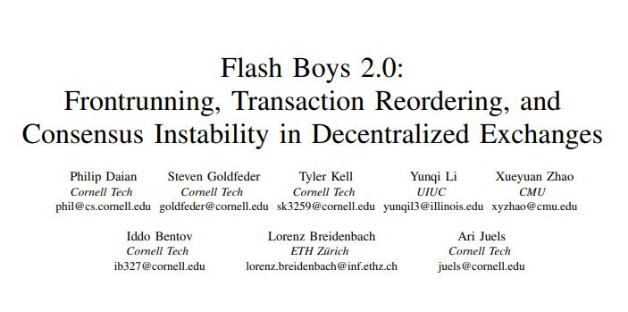

- In another article, _Phil Daian et al, 2019_ talked about how one particular species of frontrunning bots, called **Generalized Frontrunners** scans the mempool for profitable transactions.
- If someone just submitted a _burn_ transaction to the mempool the Dark Forest bots would be imediately alerted.

<aside class="notes"><ul>
<li>Dan was well aware this would not be easy</li>
<li>it was a ticking time bomb</li>
<li>They had to desing an obfuscated rescue method to try and not alert the bots about the free money.</li>
</ul>
</aside></script></section><section  data-markdown><script type="text/template">
## The Dark Forest: To The Rescue

- Dan Robinson recruited the help of fellow engineers (i.e. [Georgios Konstantopoulos]() and [Alberto Cuesta Canada]() and a few others) and they came up with the following solution:

<div style="font-size: 0.62em;">

```Solidity [1-7 | 9-21 | 23-47]
interface IGetter {
  function set(bool) external;
}

interface IPool {
  function burn(address to) external returns (uint amount0, uint amount1);
}

contract Setter {

  address private owner;

  constructor () public {
    owner = msg.sender;
  }

  function set(address getter, bool on) public {
    require(msg.sender == owner, "no-owner");
    IGetter(getter).set(on);
  }
}

Contract Getter is IGetter {
  IPool private pool;
  address private setter;
  address private getter;
  address private dest;
  bool private on;

  constructor(address pool_, address setter_, address getter_, address dest_) public {
    pool = IPool(pool_);
    setter = setter_;
    getter = getter_;
    dest = dest_;
  }

  function set(bool on_) public override {
    require(msg.sender == setter, "no-setter");
    on = on_;
  }

  function get() public {
    require(msg.sender == getter "no-getter");
    require(on == true, "no-break");
    pool.burn(dest);
  }
}
```

</div>

<aside class="notes"><ul>
<li>the call to <em>burn</em> is hidden inside a larger <em>get</em> tx</li>
<li>the tx is split into two, among two contracts:<ul>
<li><em>Setter</em> contract which, when called by its owner, would activate the Getter contract.</li>
<li><em>Getter</em> when called by its owner, would make the burn call ONLY if activated else it reverts.</li>
</ul>
</li>
<li>Can you see the problem (or the challenge here?)</li>
</ul>
</aside></script></section><section  data-markdown><script type="text/template">
## The Dark Forest: the Monsters are real

- During the rescue attempts the **get** transaction would get rejected by the Infura node.
- Due to the time pressure and late night time, the final **get** tx slipped into a later block.
- When the it was finally executed it reverted with **INSUFFICIENT_LIQUIDITY_BURNED**, meaning a bot had already executed the internal _burn_ call and took the funds.

<aside class="notes"><ul>
<li>If the attacker only tried executing the get transaction, it would revert without calling the burn function.</li>
<li>The hope was that by the time the attacker executed both the <em>set</em> and <em>get</em> txs in a sequence, to spot the internal call to <em>pool.burn</em> and frontrun the rescue attempt, the get transaction would already be included in a mined block</li>
<li>BUT : this means the <em>set</em> and <em>get</em> txs <strong>have</strong> to be included in the same block.</li>
<li>Do you see what could have been done better?</li>
</ul>
</aside></script></section><section  data-markdown><script type="text/template">
## The Dark Forest: the Monsters are real

- Avoid public infrastructure.
- Some examples of a private pool transactions offerings:
  - <font color="#8d3aed">[blocxroute](https://bloxroute.com/products/)</font><!-- markdown-link-check-disable-line -->
  - <font color="#8d3aed">[taichi network](https://taichi.network/)</font>
  - <font color="#8d3aed">[1inch network](https://1inch.io/)</font>

<aside class="notes"><ul>
<li>maybe a better obfuscation (e..g get could be a no-op instea dof reverting if called without set)<ul>
<li>causing a bot to miss the internal tx</li>
</ul>
</li>
<li>contact a miner to manually include your tx in a block, skipping the mempool</li>
<li>or sync your own node</li>
</ul>
</aside></script></section><section  data-markdown><script type="text/template">
## Common Vulnerabilities

```rust []
#[ink(storage)]
pub struct NameServer {
    registry: Mapping<Vec<u8>, AccountId>,
}

#[ink(message, payable)]
pub fn register(&mut self, name: Vec<u8>) {
    let owner = self.env().caller();
    let fee = self.env().transferred_value();

    if !self.registry.contains(&name) && fee >= ONE_AZERO {
        self.registry.insert(name, &owner);
    }
}
```

- On-chain domain name registry with a register fee of 1 Azero.
- Why is this a bad idea?

<aside class="notes"><ul>
<li>Can you propose a better design?</li>
<li>everything on-chain is public</li>
<li>this will be front-run in no time</li>
</ul>
</aside></script></section><section  data-markdown><script type="text/template">
## Common Vulnerabilities: frontrunning

<div style="font-size: 0.62em;">

```rust [1-6|8-24|26-49]
#[ink(storage)]
pub struct BetterNameServer {
    commitments: Mapping<Keccak256HashOutput, Commitment>,
    registry: Mapping<Vec<u8>, AccountId>,
    duration: u32,
}

#[ink(message, payable)]
pub fn commit(&mut self, commitment: Keccak256HashOutput) {
    let owner = self.env().caller();
    let fee = self.env().transferred_value();
    let timestamp = self.env().block_number();

    if fee < ONE_AZERO {
        panic!("Fee too low");
    }

    if self.commitments.get(commitment).is_some() {
        panic!("Name already committed");
    }

    self.commitments
        .insert(commitment, &Commitment { owner, timestamp });
}

#[ink(message)]
pub fn reveal(&mut self, name: Vec<u8>) {
    let caller = self.env().caller();
    let now = self.env().block_number();
    let commitment_hash = keccak256(&name);

    if self.registry.contains(&name) {
        panic!("Commitment already revealed");
    }

    match self.commitments.get(commitment_hash) {
        None => panic!("No such name committed"),
        Some(commitment) => {
            if commitment.owner != caller {
                panic!("Caller did not commit to this name");
            }

            if commitment.timestamp + self.duration < now {
                panic!("Not in reveal period");
            }
            self.registry.insert(name, &caller);
        }
    }
}
```

</div>

- Previous design had a fatal flaw: it was opened to a frontrunning attack.
- Anyone could read the name from the tx and replace the address with his own.
- A much better design is a commit - reveal scheme.

<aside class="notes"><ul>
<li>think <em>Nike</em>or <em>CocaCola</em></li>
<li>or an auction with users bidding for names</li>
</ul>
</aside></script></section><section  data-markdown><script type="text/template">
## Common Vulnerabilities

<div style="font-size: 0.72em;">

```rust [3-7,12,18]

#[ink(message)]
pub fn swap(
    &mut self,
    token_in: AccountId,
    token_out: AccountId,
    amount_token_in: Balance,
) -> Result<(), DexError> {
    let this = self.env().account_id();
    let caller = self.env().caller();

    let amount_token_out = self.out_given_in(token_in, token_out, amount_token_in)?;

    // transfer token_in from user to the contract
    self.transfer_from_tx(token_in, caller, this, amount_token_in)?;

    // transfer token_out from contract to user
    self.transfer_tx(token_out, caller, amount_token_out)?;
    ...
}
```

</div>

- Contract is a <font color="#8d3aed">DEX</font> <font color="#8d3aed">D</font>ecentralized <font color="#8d3aed">EX</font>change, follows the popular <font color="#8d3aed">AMM</font> (<font color="#8d3aed">A</font>utomated <font color="#8d3aed">M</font>arket <font color="#8d3aed">M</font>aker) design.
- Tx swaps the specified amount of one of the pool's PSP22 tokens to another PSP22 token according to the current price.
- What can go wrong here?

<aside class="notes"><ul>
<li>no slippage protection in place.</li>
<li>bot will frontrun the victim&#39;s tx by purchasing token_out before the trade is executed.</li>
<li>this purchase will raise the price of the asset for the victim trader and increases his slippage</li>
<li>if the bot sells right after the victims tx (back runs the victim) this is a sandwich attack</li>
</ul>
</aside></script></section><section  data-markdown><script type="text/template">
## Common Vulnerabilities: sandwitch attacks

<div style="font-size: 0.70em;">

```rust [7,10-12]
 #[ink(message)]
 pub fn swap(
     &mut self,
     token_in: AccountId,
     token_out: AccountId,
     amount_token_in: Balance,
     min_amount_token_out: Balance,
 ) -> Result<(), DexError> {
     ...
     if amount_token_out < min_amount_token_out {
         return Err(DexError::TooMuchSlippage);
     }
 ...
 }
```

</div>

- Contract was vulnerable to a _sandwitch_ attack:
  - A bot could purchase some amount of _token_out_ just before the trade is executed, raising the price.
  - After victims tx is executed the bot sells, back running the trade.
- Design should protect the user from excessive slippage.

<aside class="notes"><ul>
<li>slippage protection in place</li>
</ul>
</aside></script></section><section  data-markdown><script type="text/template">
## Why is MEV a problem?

- ... and how big of a problem it is?

<aside class="notes"><ul>
<li>we end this section with a general discussion of repercussion of MEV</li>
</ul>
</aside></script></section><section  data-markdown><script type="text/template">
## Gas price inflation


- Users engage in bid wars to include their txs in a block.
- This drivers gas prices higher and higher.
- The _regular / honest_ users are the ones hurt the most.

<aside class="notes"><ul>
<li>The competition among users to get their transactions included in a block with higher priority leads to increased demand for block space.</li>
<li>Users will bid higher gas prices to outcompete others, driving up gas prices across the network.</li>
<li>This results in inflated transaction costs for users</li>
</ul>
<ul>
<li>miners make profit</li>
<li>arbitrageurs and MEV traders still make profit (albeit less)</li>
</ul>
</aside></script></section><section  data-markdown><script type="text/template">
## Network congestion


- Miners/validators have the power to order or censors include transactions in a block.
- They will naturaly lean towards processing the txs with higher gas fees, or even to insert their own txs.
- Other txs will be stuck in the mempool, leading to congestion.

<aside class="notes"><ul>
<li>Transaction Ordering: Miners have the discretion to choose the order in which they include transactions in a block.</li>
<li>They can prioritize transactions that offer higher fees or provide more favorable conditions for their own profit-maximizing strategies.</li>
<li>This can result in certain transactions being delayed or stuck in the mempool, leading to congestion.</li>
</ul>
</aside></script></section><section  data-markdown><script type="text/template">
## Zero-sum game

- Total extracted MEV before the merge: _283'962 ETH_ (**$ 675,623,114** December 2019 - September 2022)
- Total extracted MEV since the merge: _407'804 ETH_ (**$ 970'275'823** in Jan 2024)


credit: https://transparency.flashbots.net/

<aside class="notes"><ul>
<li>almost a billion dollars after the merge</li>
<li>defi is a zero sum game, if someone won 1 bill someon else lost 1 bill, who did?</li>
<li>answer: you, I, he, she</li>
</ul>
</aside></script></section><section  data-markdown><script type="text/template">
## Consensus instability (longest chain)

- MEV can cause instabilities in the consensus layer (at least with the longest chain rule).

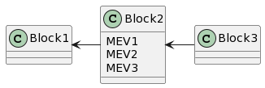

<div style="font-size: 0.62em;">

credit: [Dan Boneh](https://crypto.stanford.edu/~dabo/)

</div>

<aside class="notes"><ul>
<li>Assume we are in the longest chain rule scenario (this can be POW or POS chain).</li>
<li>How? Imagine a block with three juicy MEV opportunities. These txs are already validated and part of the chain.</li>
<li>validator sees this opportunity and instead proposes his own block, but leaves some of the opportunities out of it.</li>
<li>now other validators are incentivized to take these MEV opportunities and start building on his proposed block, thus causing a re-org.</li>
</ul>
</aside></script></section><section  data-markdown><script type="text/template">
## Consensus instability (longest chain)

- If block rewards are smaller than the MEV opportunities, rational miners / validators will destabilize consensus by reordering or censoring the transactions all the time.

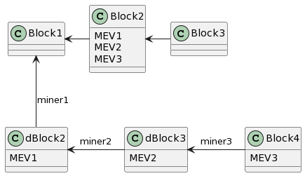

<div style="font-size: 0.62em;">

credit: [Dan Boneh](https://crypto.stanford.edu/~dabo/)

</div>

- What could the searcher / arbitrageurs do to not have their MEV stolen from them?

<aside class="notes"><ul>
<li>Time bandit attack</li>
<li>Because of MEV we cannot assume 51% honest majority</li>
<li>all actors are rational actors, so they will go for maximal profit</li>
<li>imagine you are the searcher and you found this MEV opportunity.<ul>
<li>What can you do to be sure to have it included?</li>
</ul>
</li>
</ul>
</aside></script></section><section  data-markdown><script type="text/template">
## Private mempools

- MEV actors can contract with miners / validators.
- They do it for a substantial fee, but at leat this way they still profit.
- Why does this lead to a horrible outcome for a blockchain?

<aside class="notes"><ul>
<li>they send their tx directly to the miner, skipping the mempool</li>
<li>when its the validator turn to propose a block they include this tx in it (for a fee)</li>
<li>can you see any problems with this?</li>
</ul>
</aside></script></section><section  data-markdown><script type="text/template">
## Private mempools

- Pretty soon everbody is sending their txs to a handful of validators that they trust.
- It is very hard to become a new trusted validator.
- Massive centralization.

<aside class="notes"><ul>
<li>centralization of power</li>
<li>rich get richer type of a problem</li>
</ul>
</aside></script></section><section  data-markdown><script type="text/template">
## Flashbots (MEV-geth)

- flashbots: democratizing MEV Extraction.
- [MEV-geth](https://github.com/flashbots/mev-geth)

<aside class="notes"><ul>
<li>flashbots is a sealed-bid block space auction mechanism for bidding on transaction order preference.</li>
<li>auctions happen off-chain</li>
</ul>
</aside></script></section><section  data-markdown><script type="text/template">
## MEV: the good, the bad and the ugly

- Is all MEV inherently bad for the network?
  - arbitrage
  - liquidations
- MEV is unavoidable.
- MEV as a security budget?

<aside class="notes"><ul>
<li>MEV is wrong and it has to be stopped?<ul>
<li>arbitrage: there are markets that are not equal and arbitrageurs provide a service that keeps the systems healthy</li>
<li>liquidations: you want fast loan liquidations (right after a price oracle update that triggers them) and the lenders ot be repayed swiftly.</li>
</ul>
</li>
<li>MEV is a fact of life.</li>
<li>from the economic security perspective: MEV could be an additional source of revenue for the validators.</li>
<li>but it HAS to be distributed equally, else it is an almost existential threat to the network.</li>
</ul>
</aside></script></section><section  data-markdown><script type="text/template">
## What to do: Proposer-builder separation (PBS)

[MEV-boost](https://boost.flashbots.net/) is an implementation of PBS for post-merge Ethereum

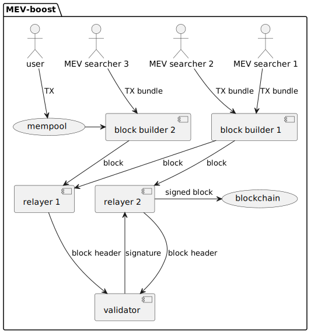

<div style="font-size: 0.62em;">

credit: [Dan Boneh](https://crypto.stanford.edu/~dabo/)

</div>

<div style="font-size: 0.45em">

- **Block Builders**
  Responsible for collecting the txs, assembling the blocks, including validating the txs and creating the block header.
  They also include the MEV offer to validators (fee).

- **Relayers:**
  Collect blocks, choosing the ones with biggest MEV offer.
  Send block headers (**NOT** blocks) to the validators (block proposers).

- **Block Proposers:**
  Validators who are chosen to propose blocks are known as "block proposers."
  They choose the best MEV offers, sign them with staking key and send them back to relayers, who publish them to the network.

</div>

<aside class="notes"><ul>
<li>PBS is basically an open market of block builders and validators (block proposers)</li>
<li>searchers and users send their txs to block builders<ul>
<li>builders are just ppl they have a business relation with</li>
<li>they might send them to multiple ones that they trust</li>
<li>if they happen to steal their tx they will just never come back to them again</li>
</ul>
</li>
<li>now builders take bundles from the searchers and txs from the end users and they construct blocks out of them<ul>
<li>they order them</li>
</ul>
</li>
<li>they send the to relayers that they trust in turn<ul>
<li>can relayers cheat here?</li>
<li>they could technically steal the txs from the builders</li>
<li>but just once</li>
</ul>
</li>
<li>relayers talk to the validators<ul>
<li>they don&#39;t send blocks, because if they did the rational validators would steal the MEV</li>
<li>instead they send commitments (block headers, hashed transactions) along with a proposed fee from searchers</li>
</ul>
</li>
<li>validators sign the headers and send the signatures back to the relayers</li>
<li>relayers send the blocks to the network<ul>
<li>Q: why can&#39;t it be stolen at this point?</li>
<li>Because he already signed a header for this slot &amp; it was sent on chain. Cheat at this point = get your stake slashed</li>
</ul>
</li>
<li>rent for block space type of arrangment</li>
</ul>
</aside></script></section><section  data-markdown><script type="text/template">
## MEV: tip of the iceberg

- <font color="#8d3aed">[DeFi MOOC](https://defi-learning.org/f22)</font>, especially lectures by [Arthur Gervais](https://arthurgervais.com/).
- **Bankless** podcast <font color="#8d3aed">[episode 66](https://www.youtube.com/watch?v=rOVz7dOrGyY)</font> with _Phil Daian, Georgios Konstantopoulos, Charlie Noyes_.
- <font color="#8d3aed">[Flashbots](https://www.flashbots.net/)</font> R&D organization focused on MEV research.
</script></section><section  data-markdown><script type="text/template">
## Fin

- Integer overflows
- Re-entrancy vulnerabilities
- Sybil attacks
- ...
- Regulatory attacks 😅
- ...
- Take MEV into account

<aside class="notes"><ul>
<li>long list of possible attacks</li>
<li>too long to fit into one lecture</li>
<li>baseline: get an audit from a respectable firm</li>
<li>publish your source code (security by obscurity is not security)</li>
<li>take MEV into account when designing your protocols.</li>
<li>MEV-resistant design patterns in your smart contracts.<ul>
<li>timelocks</li>
<li>encryption</li>
</ul>
</li>
</ul>
</aside></script></section><section  data-markdown><script type="text/template">
## Pause

<!-- Optional challenge: [github.com/Polkadot-Blockchain-Academy/adder](https://github.com/Polkadot-Blockchain-Academy/adder) -->

<aside class="notes"><p>Piotr takes over to talk about making runtime calls from contracts and writing automated tests.</p>
</aside></script></section><section  data-markdown><script type="text/template">
## Interacting with the execution environment

```rust [5-6]
impl MyContract {
  ...
  #[ink(message)]
  pub fn terminate(&mut self) -> Result<()> {
      let caller = self.env().caller();
      self.env().terminate_contract(caller)
  }
  ...
}
```
</script></section><section  data-markdown><script type="text/template">
## Blockchain node onion
</script></section><section  data-markdown><script type="text/template">
## Blockchain node onion

<br/>


</script></section><section  data-markdown><script type="text/template">
## Blockchain node onion

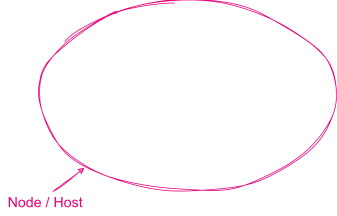

- networking
- block production, dissemination, finalization
- storage management
- off-chain maintenance, querying, indexing
</script></section><section  data-markdown><script type="text/template">
## Blockchain node onion


- computing new state based on the previous one and a single transaction
</script></section><section  data-markdown><script type="text/template">
## Blockchain node onion


- executing contract calls
</script></section><section  data-markdown><script type="text/template">
## Standard API

- `caller()`
- `account_id()`
- `balance()`
- `block_number()`
- `emit_event(event: Event)`
- `transfer(dest: AccountId, value: Balance)`
- `hash_bytes(input: &[u8], output: &mut [u8])`
- `debug_message(msg: &str)`
- [_and many more_](https://docs.rs/ink_env/4.2.1/ink_env/index.html#functions)
</script></section><section  data-markdown><script type="text/template">
## Standard API

```rust
impl MyContract {
  ...
  #[ink(message)]
  pub fn terminate(&mut self) -> Result<()> {
      let caller = self.env().caller();
      self.env().terminate_contract(caller)
  }
  ...
}
```
</script></section><section  data-markdown><script type="text/template">
## Interacting with the state transition function

<br/>

<div class="flex-container fragment">
<div class="left">
<div style="text-align: center"> <center><h2><pre> User API </pre></h2></center> </div>

<ul>
<li>token transfer</li>
<li>staking</li>
<li>voting</li>
<li>contract call</li>
<li>...</li>
</ul>
</div>

<div class="left fragment">
<div style="text-align: center"> <center><h2><pre> Contract API </pre></h2></center> </div>

<ul>
<li>advanced cryptography</li>
<li>bypassing standard restrictions</li>
<li>outsourcing computation</li>
<li>...</li>
</ul>
</div>
</div>
</script></section><section  data-markdown><script type="text/template">
## Interacting with the state transition function

<br/>

<div class="flex-container">
<div class="left">
<div style="text-align: center"> <center><h2><pre> User API </pre></h2></center> </div>
<div style="text-align: center"> <center><h2><pre> (usually for humans) </pre></h2></center> </div>

<ul>
<li>token transfer</li>
<li>staking</li>
<li>voting</li>
<li>contract call</li>
<li>...</li>

**_runtime call_**

</ul>
</div>

<div class="left">
<div style="text-align: center"> <center><h2><pre> Contract API </pre></h2></center> </div>
<div style="text-align: center"> <center><h2><pre> (only for contracts) </pre></h2></center> </div>

<ul>
<li>advanced cryptography</li>
<li>bypassing standard restrictions</li>
<li>outsourcing computation</li>
<li>...</li>

<br/>

**_chain extension_**

</ul>
</div>
</div>
</script></section><section  data-markdown><script type="text/template">
## Runtime

<br/>

In Polkadot ecosystem _state transition function_ is called **_runtime_**
</script></section><section  data-markdown><script type="text/template">
## Calling runtime

<br/>

```rust [7-10]
#[ink(message)]
pub fn transfer_through_runtime(
    &mut self,
    receiver: AccountId,
    value: Balance,
) -> Result<(), RuntimeError> {
    let call_object = RuntimeCall::Balances(BalancesCall::Transfer {
        receiver,
        value,
    });

    self.env().call_runtime(&call_object)
}
```
</script></section><section  data-markdown><script type="text/template">
## Calling runtime

<br/>

```rust [12]
#[ink(message)]
pub fn transfer_through_runtime(
    &mut self,
    receiver: AccountId,
    value: Balance,
) -> Result<(), RuntimeError> {
    let call_object = RuntimeCall::Balances(BalancesCall::Transfer {
        receiver,
        value,
    });

    self.env().call_runtime(&call_object)
}
```
</script></section><section  data-markdown><script type="text/template">
## Chain extensions

<br/>

Chain extension is a way to extend the runtime with custom functionalities _dedicated to contracts_.
</script></section><section  data-markdown><script type="text/template">
## Chain extensions

<br/>

**ink! side:**

- provide `ChainExtension` trait
- include extension in the `Environment` trait instantiation

<br/>

**runtime side:**

- handling extension calls
- extension logic itself
</script></section><section  data-markdown><script type="text/template">
## Provide `ChainExtension` trait

```rust [1-7]
#[ink::chain_extension]
pub trait OutsourceHeavyCrypto {
  type ErrorCode = OutsourcingErr;

  #[ink(extension = 41)]
  fn outsource(input: Vec<u8>) -> [u8; 32];
}

pub enum OutsourcingErr {
  IncorrectData,
}

impl ink::env::chain_extension::FromStatusCode for OutsourcingErr {
  fn from_status_code(status_code: u32) -> Result<(), Self> {
    match status_code {
      0 => Ok(()),
      1 => Err(Self::IncorrectData),
      _ => panic!("encountered unknown status code"),
    }
  }
}
```
</script></section><section  data-markdown><script type="text/template">
## Provide `ChainExtension` trait

```rust [9-21]
#[ink::chain_extension]
pub trait OutsourceHeavyCrypto {
  type ErrorCode = OutsourcingErr;

  #[ink(extension = 41)]
  fn outsource(input: Vec<u8>) -> [u8; 32];
}

pub enum OutsourcingErr {
  IncorrectData,
}

impl ink::env::chain_extension::FromStatusCode for OutsourcingErr {
  fn from_status_code(status_code: u32) -> Result<(), Self> {
    match status_code {
      0 => Ok(()),
      1 => Err(Self::IncorrectData),
      _ => panic!("encountered unknown status code"),
    }
  }
}
```
</script></section><section  data-markdown><script type="text/template">
## Include extension in the `Environment` trait instantiation

<br/>

```rust
pub enum EnvironmentWithOutsourcing {}
impl Environment for EnvironmentWithOutsourcing {
    ... // use defaults from `DefaultEnvironment`
    type ChainExtension = OutsourceHeavyCrypto;
}

#[ink::contract(env = crate::EnvironmentWithOutsourcing)]
mod my_contract {
  ...
}
```
</script></section><section  data-markdown><script type="text/template">
## Include extension in the `Environment` trait instantiation

<br/>

```rust
#[ink::contract(env = crate::EnvironmentWithOutsourcing)]
mod my_contract {
  fn process_data(&mut self, input: Vec<u8>) -> Result<(), OutsourcingErr> {
    self.env().extension().outsource(subject)
  }
}
```
</script></section><section  data-markdown><script type="text/template">
## Handling extension calls

<br/>

```rust [5-11]
pub struct HeavyCryptoOutsourcingExtension;

impl ChainExtension<Runtime> for HeavyCryptoOutsourcingExtension {
  fn call<E: Ext>(&mut self, env: Env) -> Result<RetVal, DispatchError> {
    match env.func_id() {
      41 => internal_logic(),
      _ => {
        error!("Called an unregistered `func_id`: {func_id}");
        return Err(DispatchError::Other("Unimplemented func_id"))
      }
    }
    Ok(RetVal::Converging(0))
}
```
</script></section><section  data-markdown><script type="text/template">
## Chain extension: reaching even further


</script></section><section  data-markdown><script type="text/template">
## Testing contracts
</script></section><section  data-markdown><script type="text/template">
## Testing contracts

<br/>


</script></section><section  data-markdown><script type="text/template">
## Testing contracts


</script></section><section  data-markdown><script type="text/template">
## Unit tests

<br/>

```rust [1-3]
#[ink::test]
fn erc20_transfer_works() {
  let mut erc20 = Erc20::new(100);

  assert_eq!(erc20.balance_of(BOB), 0);
  // Alice transfers 10 tokens to Bob.
  assert_eq!(erc20.transfer(BOB, 10), Ok(()));
  // Bob owns 10 tokens.
  assert_eq!(erc20.balance_of(BOB), 10);

  let emitted_events = ink::env::test::recorded_events().collect::<Vec<_>>();
  assert_eq!(emitted_events.len(), 2);

  // Check first transfer event related to ERC-20 instantiation.
  assert_transfer_event(
    &emitted_events[0], None, Some(ALICE), 100,
  );
  // Check the second transfer event relating to the actual transfer.
  assert_transfer_event(
    &emitted_events[1], Some(ALICE), Some(BOB), 10,
  );
}
```
</script></section><section  data-markdown><script type="text/template">
## Unit tests

<br/>

```rust [5-9]
#[ink::test]
fn erc20_transfer_works() {
  let mut erc20 = Erc20::new(100);

  assert_eq!(erc20.balance_of(BOB), 0);
  // Alice transfers 10 tokens to Bob.
  assert_eq!(erc20.transfer(BOB, 10), Ok(()));
  // Bob owns 10 tokens.
  assert_eq!(erc20.balance_of(BOB), 10);

  let emitted_events = ink::env::test::recorded_events().collect::<Vec<_>>();
  assert_eq!(emitted_events.len(), 2);

  // Check first transfer event related to ERC-20 instantiation.
  assert_transfer_event(
    &emitted_events[0], None, Some(ALICE), 100,
  );
  // Check the second transfer event relating to the actual transfer.
  assert_transfer_event(
    &emitted_events[1], Some(ALICE), Some(BOB), 10,
  );
}
```
</script></section><section  data-markdown><script type="text/template">
## Unit tests

<br/>

```rust [11-22]
#[ink::test]
fn erc20_transfer_works() {
  let mut erc20 = Erc20::new(100);

  assert_eq!(erc20.balance_of(BOB), 0);
  // Alice transfers 10 tokens to Bob.
  assert_eq!(erc20.transfer(BOB, 10), Ok(()));
  // Bob owns 10 tokens.
  assert_eq!(erc20.balance_of(BOB), 10);

  let emitted_events = ink::env::test::recorded_events().collect::<Vec<_>>();
  assert_eq!(emitted_events.len(), 2);

  // Check first transfer event related to ERC-20 instantiation.
  assert_transfer_event(
    &emitted_events[0], None, Some(ALICE), 100,
  );
  // Check the second transfer event relating to the actual transfer.
  assert_transfer_event(
    &emitted_events[1], Some(ALICE), Some(BOB), 10,
  );
}
```
</script></section><section  data-markdown><script type="text/template">
## E2E tests

<br/>

```rust [1-7]
#[ink_e2e::test]
async fn e2e_transfer(mut client: ink_e2e::Client<C, E>) -> E2EResult<()> {
  let constructor = Erc20Ref::new(total_supply);
  let erc20 = client
          .instantiate("erc20", &ink_e2e::alice(), constructor, 0, None)
          .await
          .expect("instantiate failed");

  let mut call = erc20.call::<Erc20>();
  let total_supply_msg = call.total_supply();
  let total_supply_res = client
          .call_dry_run(&ink_e2e::bob(), &total_supply_msg, 0, None)
          .await;
  ...
}
```
</script></section><section  data-markdown><script type="text/template">
## E2E tests

<br/>

```rust [9-13]
#[ink_e2e::test]
async fn e2e_transfer(mut client: ink_e2e::Client<C, E>) -> E2EResult<()> {
  let constructor = Erc20Ref::new(total_supply);
  let erc20 = client
          .instantiate("erc20", &ink_e2e::alice(), constructor, 0, None)
          .await
          .expect("instantiate failed");

  let mut call = erc20.call::<Erc20>();
  let total_supply_msg = call.total_supply();
  let total_supply_res = client
          .call_dry_run(&ink_e2e::bob(), &total_supply_msg, 0, None)
          .await;
  ...
}
```
</script></section><section  data-markdown><script type="text/template">
## E2E tests

<br/>

```rust [14]
#[ink_e2e::test]
async fn e2e_transfer(mut client: ink_e2e::Client<C, E>) -> E2EResult<()> {
  let constructor = Erc20Ref::new(total_supply);
  let erc20 = client
          .instantiate("erc20", &ink_e2e::alice(), constructor, 0, None)
          .await
          .expect("instantiate failed");

  let mut call = erc20.call::<Erc20>();
  let total_supply_msg = call.total_supply();
  let total_supply_res = client
          .call_dry_run(&ink_e2e::bob(), &total_supply_msg, 0, None)
          .await;
  ...
}
```
</script></section><section  data-markdown><script type="text/template">
## E2E pipeline: traps, traps everywhere

<div style="font-size: 0.6em">

1. Preparing and encoding transaction data (_client side_)
1. Signing the transaction (_client side_)
1. Sending transaction to a node (_client side_)
1. Block and event subscribing (_client side_)
1. Transaction pool processing (_node side_)
1. Block building (_node side_)
1. Block dissemination (_node side_)
1. Import queue processing (_node side_)
1. Block finalizing (_node side_)
1. Block execution (_node side_)
1. Transaction execution (_runtime side_)
1. Event emitting (_node side_)
1. Event capturing (_client side_)
1. Event processing (_client side_)
1. State fetching via RPC calling (_client side_)
1. State report (_node side_)
1. State validation (_client side_)

</div>
</script></section><section  data-markdown><script type="text/template">
## E2E pipeline: traps, traps everywhere


</script></section><section  data-markdown><script type="text/template">
## Test core

<br/>

1. Preparing and encoding transaction data (_given_)
1. Transaction execution (_when_)
1. State validation (_then_)
</script></section><section  data-markdown><script type="text/template">
## quasi-E2E tests

<br/>

Interact directly with runtime, skipping node layer.
</script></section><section  data-markdown><script type="text/template">
## quasi-E2E tests

<br/>

```rust
#[test]
fn flipping() -> Result<(), Box<dyn Error>> {
  let init_value = Session::<MinimalRuntime>::new(transcoder())?
      .deploy_and(bytes(), "new", &["true".to_string()], vec![])?
      .call_and("flip", &[])?
      .call_and("flip", &[])?
      .call_and("flip", &[])?
      .call_and("get", &[])?
      .last_call_return()
      .expect("Call was successful");

  assert_eq!(init_value, ok(Value::Bool(false)));

  Ok(())
}
```
</script></section><section  data-markdown><script type="text/template">
## Local playing with contracts using `drink-cli`
</script></section><section  data-markdown><script type="text/template">
## Hands-on

[github.com/Polkadot-Blockchain-Academy/ink-adder](https://github.com/Polkadot-Blockchain-Academy/ink-adder)

<aside class="notes"><p>Clone the above repository and follow instructions
Instructors here to help</p>
</aside></script></section><section  data-markdown><script type="text/template"></script></section>
    </article>
  </main>

  <script src="./../../dist/reveal.js"></script>

  <script src="./../../plugin/markdown/markdown.js"></script>
  <script src="./../../plugin/highlight/highlight.js"></script>
  <script src="./../../plugin/zoom/zoom.js"></script>
  <script src="./../../plugin/notes/notes.js"></script>
  <script src="./../../plugin/math/math.js"></script>

  <script src="./../../assets/plugin/mermaid.js"></script>
  <script src="./../../assets/plugin/mermaid-theme.js"></script>

  <script src="./../../assets/plugin/chart/chart.js"></script>
  <script src="./../../assets/plugin/chart/chart.min.js"></script>

  <script src="./../../assets/plugin/tailwindcss.min.js"></script>

  <script>
    function extend() {
      var target = {};
      for (var i = 0; i < arguments.length; i++) {
        var source = arguments[i];
        for (var key in source) {
          if (source.hasOwnProperty(key)) {
            target[key] = source[key];
          }
        }
      }
      return target;
    }

    // default options to init reveal.js
    var defaultOptions = {
      controls: true,
      progress: true,
      history: true,
      center: true,
      transition: 'default', // none/fade/slide/convex/concave/zoom
      slideNumber: true,
      mermaid: {
        startOnLoad: false,
        logLevel: 3,
        theme: 'base',
        themeVariables: {
          primaryColor: purple,
          primaryTextColor: white,
          primaryBorderColor: pink,
          lineColor: pink,
          secondaryColor: lightPurple,
          tertiaryColor: lightPurple,
        },
      },
      chart: {
        defaults: {
          color: 'lightgray', // color of labels
          scale: {
            beginAtZero: true,
            ticks: { stepSize: 1 },
            grid: { color: "lightgray" }, // color of grid lines
          },
        },
        line: { borderColor: ["#ccc", "#E6007A", "#6D3AEE"], "borderDash": [[5, 10], [0, 0]] },
        bar: { backgroundColor: ["#ccc", "#E6007A", "#6D3AEE"] },
      },
      plugins: [
        RevealMarkdown,
        RevealHighlight,
        RevealZoom,
        RevealNotes,
        RevealMath,
        RevealMermaid,
        RevealChart
      ]
    };

    // options from URL query string
    var queryOptions = Reveal().getQueryHash() || {};

    var options = extend(defaultOptions, {"width":1400,"height":900,"margin":0,"minScale":0.2,"maxScale":2,"transition":"none","controls":true,"progress":true,"center":true,"slideNumber":true,"backgroundTransition":"fade"}, queryOptions);
  </script>


  <script>
    Reveal.initialize(options);
  </script>
</body>

</html>
